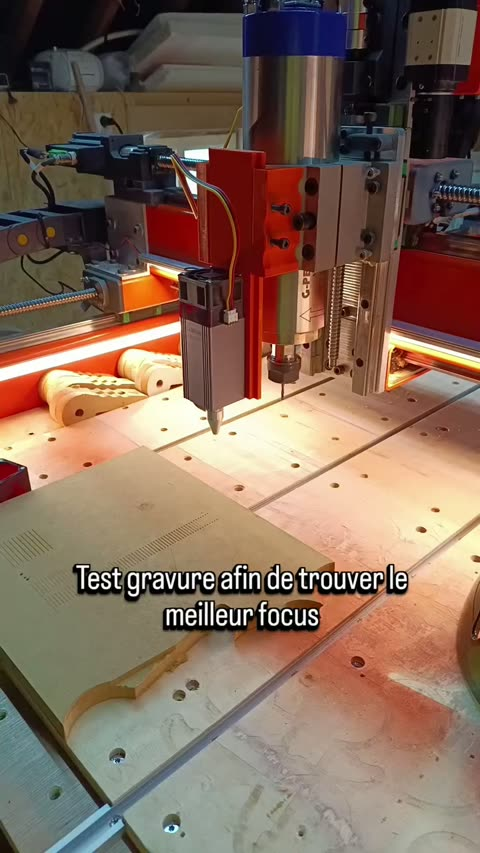
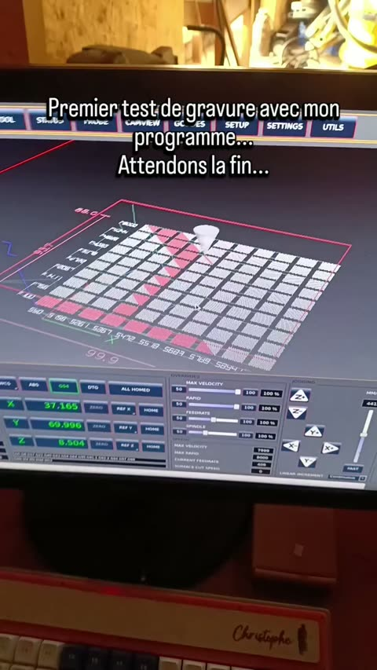
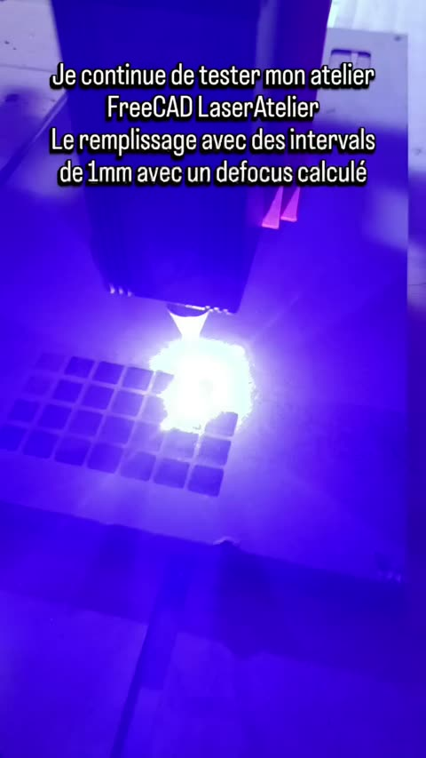
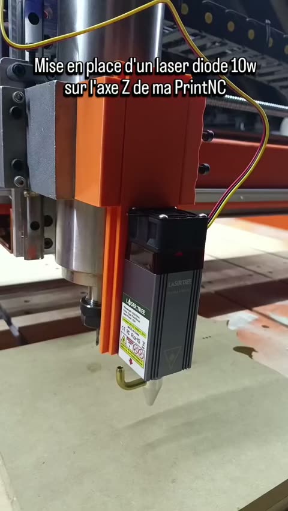
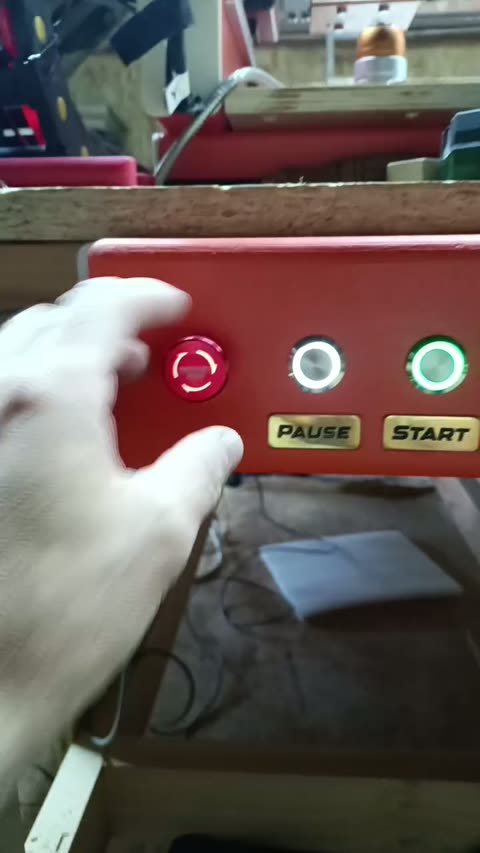
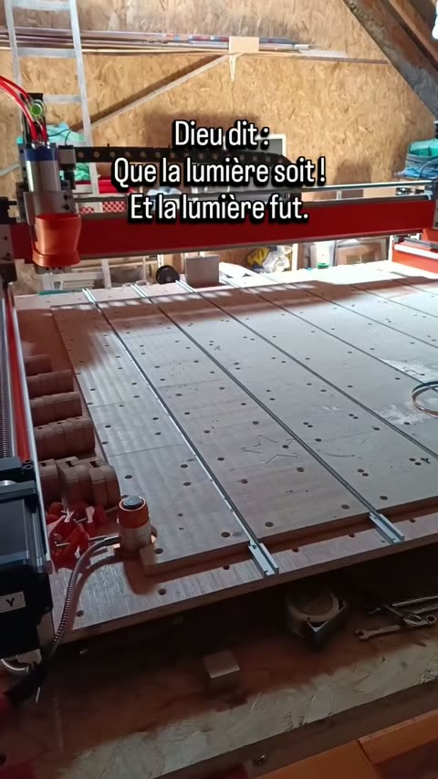
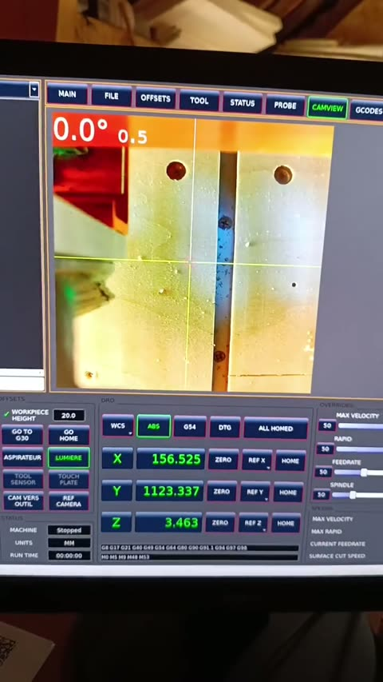
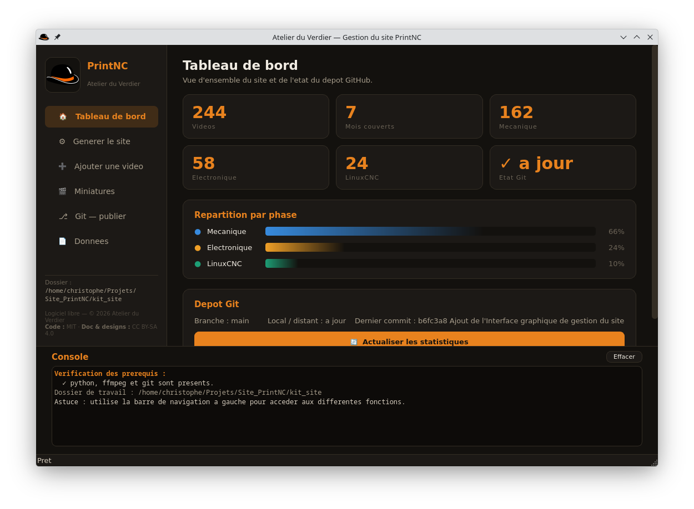

Test de gravure afin de trouver le meilleur focus
01:16

L'histoire complète d'une fraiseuse CNC construite de zero, du premier montage à blanc jusqu'à la machine pleinement fonctionnelle.

Journal de construction d'une fraiseuse CNC PrintNC, de la première pièce au premier copeau. Documentation complète, ouverte et reproductible.
Module laser sur l'axe Z, gravure et atelier FreeCAD LaserAtelier. 5 etapes
Test de gravure afin de trouver le meilleur focus
01:16
Premier test de gravure avec mon programme... Attendons la fin.
00:36
Je continue de tester mon atelier FreeCAD LaserAtelier
00:59
Mise en place du laser sur l'axe Z de ma PrintNC
05:44
Bouton d'arrêt d'urgence en place, ça n'avance pas vite ces derniers temps, mais ça avance. Je suis en train de potasser pour une grosse nouveauté, mais pour le moment j'en dis pas plus car cela ne fonctionne pas et je n'ai pas tout modélisé encore.
00:15
Accessoires, automatismes et personnalisation de QtDragon. 32 etapes
Dieu dit : Que la lumière soit ! Et la lumière fut.
00:15
Avec les leds en courant continu
00:15
Je me suis mis un bouton afin de me faciliter le déplacement de la caméra vers outils
03:11
Méthode de positionnement précis de la fraise à l'aide de la camera
03:09
J'ai installé ma caméra de positionnement
09:02
Les projets à venir
03:11
Voilà
00:15
C'est ma première fois avec du laiton
00:15
C'est sympathique tout ça !
00:15
Etape de construction (video du jour)
00:15
Etape de construction (video du jour)
00:15
Petite poche pour petite plaque
00:15
Mais quel con !!
00:15
Allez
09:42
Usinage de ma petite boîte contrôleur 3 boutons
00:15
Les relais sont opérationnels
05:42
Récupération des données du VFD HY via un script python Fantastique https://github.com/atelierduverdier/huanyang-vfd-reader
00:15
Petite carte de contrôle en service avec quelques petits soucis de réglage
01:00
Usinage pour la fixation du radiateur
01:56
Encore un petit bug corrigé qui me change la vie
10:11
Modification de l'interface LinuxCNC afin de mettre mes boutons
01:00
Mes relais fonctionnent avec un petit plus ... Des boutons 😁
00:15
Etape de construction (video du jour)
02:09
Correction de bug dans mon script de changement d'outils semi-automatique & Usinage de clamps en mdf
05:21
Etape de construction (video du jour)
00:15
Je suis revenu à mon script de changement d'outils semi-automatique Avec quelques améliorations 😊
02:56
Pas convaincu du système
00:15
Une idée
01:00
Pourquoi on ne peut pas enregistrer sous fusion 360 ?? 😤
01:00
Etape de construction (video du jour)
00:15
Etape de construction (video du jour)
00:15
Gravure sur bois de hêtre
00:59
Nouvelle carte, premiere decoupe, palpeur et precision. 69 etapes
Allez
03:49
Surfaçage en avance de 6000mm/min
00:14
J'ai trouvé pourquoi je marquais mon martyre lors de la découpe de mon plateau
00:15
Explication de mon petit soucis résolu du martyre et problème totalement de ma faute sur la cnc
01:59
Etape de construction (video du jour)
00:30
Voilà j'ai réussi
15:39
Vidéo n.2 sur la prise Z zéro sur le haut de la pièce Avec changement d'outils
10:02
Mon style de changement d'outil avec le palpeur fonctionne enfin !
11:55
Amélioration de mon système de changement d'outils semi-automatique 1 fichier pour les gouverner tous
05:05
Ce que je veux faire avec le palpeur ne fonctionne toujours pas
03:09
En avant pour le palpeur de hauteur d'outils
01:00
Je pense que cette fois c'est un essai réussi !
00:15
Deuxième passage
00:16
C'est pas aussi simple que dans grbl
00:15
Consommation environ 500VA en fraisage
00:14
Première bilan de la première gravure avec ma printnc
05:48
4 mois sans utiliser le logiciel et j'ai tout oublié !! Ça fait pas vraiment ce que je voulais 😜
00:15
La reprise est pas facile !
00:30
Petite mise au point sur mes 20 000mm/mm
06:39
Longue vidéo sur l'interface linuxcnc avec qtdragon-hd
18:11
Présentation du matériel utilisé
14:22
Je suis passé de 6500mm/min à 20 000 !!!
00:30
Explication de comment je suis passé de 6500 à 20 000mm/min
08:45
Impression en 3D du sabot d'aspiration
00:30
Juste pour le fun 😁
00:15
Réglage fin des moteurs nema23 directement sur le driver CL57T v4.1
01:00
Test de surfaçage
00:15
Je valide mes réglages de tête de broche. Top 👌🏻
00:15
Soyons fous
00:15
Etape de construction (video du jour)
00:15
Après tant de travail pour réaliser cette cnc
00:15
Ma PrintNC est fonctionnelle 4 mois de réalisation Au poil 👌🏻👍🏻
03:22
Petite démo de surfaçage sur du chêne en boit de bout. Dernière passe de 4mm a 4500mm/min
06:46
La chose dont je n'avais pas pensé L'évacuation des poussières
01:00
Première utilisation de la cnc Perçage des trous pour les inserts
00:15
Pour le moment tout fonctionne bien 😌
00:14
Ma planche de base est devenue un gruyère
01:00
J'ai été un peu foufou avec le nombre de vis !! 😅
01:00
Astuces pour moi afin d'aller plus rapidement sans passer par ma perceuse à colonne sans butée
00:59
Gabarit énorme pour faire mes perçages à égale distance. Je sais que j'aurai pu faire cela avec une planche et 6 trous
00:15
Longue explication de mon raisonnement pour le réglage de ma broche avec ces histoires de plans de référence
05:41
Gabarit imprimé
00:30
Mes réglages de niveaux & équerrages sont OK Plus qu'à confirmer cela dans la pratique
01:00
Petite présentation de mon imprimante 3D Elegoo Neptune 4 Max
03:50
C'est en répétant les gestes que l'on s'améliore Je refais mon parallélisme et équerrage
02:36
Je refais la perpendicularité Avec ma réflexion sur mes difficultés à la réaliser
02:39
Je continue mes réglages. Explication de mon processus Faut être patient...
01:57
Je prépare mes planches martyres
00:15
Positionnement des planches martyres et petit raisonnement sur la largeur de 15cm
01:00
Je refais mes réglages de la broche J'avais oublié un truc essentiel 😜
01:00
Explication de mon réglage pour la perpendicularité de ma broche
01:00
J'ai imprimé la pièce pour faire mon réglage sur la broche
00:33
Précision de la PrintNC Au centième
00:27
J'ai fixé mon plateau. 56 trous
00:15
Début du réglage de la broche
00:15
Rail pour la fixation des pièces Je pense tout haut
01:00
Je continue mes réglages
05:58
Patin pour mes tubes aciers en TPU
00:30
Allez
00:15
Vitesse de broche 3000trs/min
00:15
Perçage - taraudages
00:48
J'ai reçu ma carte
00:15
Blabla sur le premier fonctionnement de la machine
05:51
GO HOME
00:15
Belle surface de travail
00:15
Je vais faire une tentative de sauvetage de ma carte flexiHAL
00:29
PrintNC terminée
00:15
PrintNC terminé
04:53
J'ai trouvé mon bout de tuyau pour les raccords du ventilateur
00:15
Premiers mouvements sous LinuxCNC, puis un coup dur. 42 etapes
J'ai trouvé pourquoi l'extension m'a fait griller la carte
01:00
Petit clips pour ranger un peu mieux les cables
00:15
Radiateur de refroidissement pour ma cnc
00:30
Mauvaise nouvelle Carte grillée 😭
00:30
J'ai re modilisé mes supports capteur Encore un petit ajustement et ce sera parfait
00:15
Liquide de refroidissement Pour la broche OK
00:15
Rodage de la broche
00:15
Broche à 24 000 tr/min
00:15
La machine fonctionne mais je dois régler un gros problème de câble USB-C Petite démo du mouvement à 6000mm/min
03:54
Présentation du boîtier de la PrintNC Terminé à 99.9%
05:27
Premier démarrage de la PrintNC 😁
04:25
Mise en place du boîtier centralisateur des capteurs et pince pour regrouper les fils et tuyaux
01:00
Petit point sur l'avancement de la PrintNC
01:00
Plaque arrière refaite ainsi que des caches prises
00:15
Début de mise en place des capteurs sur la PrintNC
00:30
Support de prises moins haut pour axe Y1 et Y2
00:15
Modélisation réussi Ça passe 👍🏻👍🏻
00:15
Mise en place du boîtier sur les moteurs nema 23
00:15
On ne pense jamais à tout sauf lors de la mise en place 🥴
00:15
Petit support pour la connectique du moteur
00:11
Impression de mon premier support de connectique moteur nema23 👍🏻
00:30
youtube.com/@atelierduverdier
00:15
Comment retirer les barres des chemins de cables
00:15
Démontage chemin de câbles Suite
00:15
Réflexion sur la création d'un boîtier pour les connecteurs
00:15
J'ai reçu mes capteurs LJ8A3-2-Z/AX IMPECCABLE 👍🏻
01:34
Première version de mon boîtier pour brancher les câbles sur le moteur
00:15
Début du montage final de la cnc PrintNC Encore plein de petits détails à régler
00:30
Modification de l'axe Z pour y passer mon capteur
00:15
Petite explication sur mes capteurs Ça cogite !!
05:58
VICTOIRE Les moteurs tournent enfin sous LinuxCNC Merci Jean-François 🎉
05:10
Longue Demo du logiciel qtdragon sous linuxcnc
09:34
LinuxCNC avec firmware remora-flexi Interface qtdragon-hd Sur Raspberry pi 4
05:52
Impressions du support de mon chemin de câble Impeccable 👍🏻
00:15
J'avance dans la configuration de LinuxCNC
01:37
Le gros fail😂
00:15
Quand on croit que l'on a terminé... Il y a toujours une petite chose qu'on oubli
00:30
Impressions des supports de chemin de cables
00:30
Raspberry pi 4 sur la carte flexiHAL J'aimerais bien tester
00:30
Boîtier terminé 🥳 Explication de mon soucis avec les boutons e-stop et stop
06:17
Première mise en route de la broche 🤞🏻
00:30
Activation du RS485 Afin d'avoir le contrôle Sur la vitesse de broche
00:53
Montage du portique termine, debut du boitier electrique. 42 etapes
Capteurs de fin de courses OK 😁 Ça sent la fin bientôt
01:00
Magnifique jonction des 2 chemins de câbles 👍🏻
00:30
Enfin mes moteurs tournent 😃
00:30
Premier démarrage du boîtier électrique Mais je me pose une question
01:00
Je redessine tous les supports pour mes chemins de câbles Je me suis trompé de dimension lors de la commande
00:15
Mon boîtier électrique pour CNC avance tranquillement Patience 😁
00:15
Je regarde les vidéos youtubes Tout le monde a un atelier tout bien rangé Moi c'est ....... Moi
00:15
Etape de construction (video du jour)
00:15
Positionnement des perçages à la CNC
00:15
Début du câblage du boîtier électrique
00:15
C'est chouette l'impression 3D Je ne m'en sert que pour ce genre de pièces
00:15
Début du montage du boîtier électrique
00:15
Première connerie
00:15
Comment je coupe les goulottes
00:30
Petite présentation de la printnc Partie mécanique Finalisée
03:05
Petite info sur les supports en aciers
00:15
Méthode que j'ai utilisé pour fixer le bloc
00:30
Attention à la qualité de surface des impression 3D
00:15
Ma méthode pour bien fixer le support moteur.
00:14
La partie mécanique commence à se terminer
00:14
Méthode de mise à niveau des 4 côtés de la cnc
00:30
Réimpressions des plaques pour la vis à billes avec taraudages
00:15
Montage des supports pour l'axe X tout est OK Ouff
00:14
Enfin tout est fluide sur les rails parallèles. J'ai trouvé le petit problème
00:14
Explication de mon petit problème que j'ai mis tant de temps à résoudre
00:29
Échec total des mes platines en aluminium
00:15
Dans les échecs il y a toujours du bon ☺️
00:14
Petit problème sur la vis sans fin
00:14
Etape de construction (video du jour)
00:16
Etape de construction (video du jour)
00:15
Changement de l'embase en aluminium par un tube d'acier coupé
00:15
Bientôt la fin du montage de la printnc
01:00
Légé surfacage pour que ce soit joli. Je voulais poncer et peindre mais j'ai changé d'avis en voyant mon étau de perceuse !
00:15
Semelles en aluminium au lieu de l'impression 3D
00:15
Malgré mon énervement d'hier
00:13
Etape de construction (video du jour)
00:15
Etape de construction (video du jour)
00:30
Etape de construction (video du jour)
00:12
J'insiste pas avec cette cnc pour l'aluminium
00:15
Montage de la printNC. Pas de serrage de vis définitif afin de bien régler les équerrage et les petits réglages diverses.
00:15
Serrages des vis
00:15
Bientôt la fin du montage de PrintNC
00:15
Plaques reimprimees, rajustees, et le cablage de la broche. 50 etapes
Début de montage de la printnc avec des vis de 6 mm et rondelle frein de vis.
00:15
Montage et réglage axe X
00:15
Etape de construction (video du jour)
00:15
Étape cruciale sur la PrintNC : le câblage de la broche G-Penny ⚡️. Aujourd’hui
00:05
Démontage d'un patin HGW20CC
03:49
Etape de construction (video du jour)
00:15
Etape de construction (video du jour)
00:15
Etape de construction (video du jour)
00:15
Etape de construction (video du jour)
00:15
Nettoyage de la broche CNC g-penny 2
00:15
Dégraissage des patins de guidages des rails linéaires
00:15
En attendant de recevoir la peinture et le petit matériel électrique
00:30
Clavier DIY réalisé en 2023 @qmk
01:01
J'ai mis tout de visu afin de voir comment je vais brancher tout ça !!
00:15
Réglage du porte broche de la printnc. Pour ceux que ça intéresse : wiki.printnc.info
00:15
Capteur de proximité inductif LJ8A3-2-Z/AX npn nc 5v
00:15
Porte broche mais il me faut un gabarit pour percer au bon endroit !!
00:15
Réalisation d'un gabarit de perçage en impression 3D
00:15
Etape de construction (video du jour)
00:15
Support de broche fixé
00:15
Première couche d'orange
00:15
Etape de construction (video du jour)
00:15
Partie peinture
00:15
Etape de construction (video du jour)
00:15
Ponçage pour l'accroche de la peinture grain 120
00:13
Je suis enfin parvenu à faire mon axe Z
00:15
Etape de construction (video du jour)
00:15
Encore une plaque pour l'axe Z
00:39
Etape de construction (video du jour)
00:15
Etape de construction (video du jour)
00:14
Parcours d'outils sous FreeCAD pour la plaque pour le porte broche sur l'axe Z. Test sur bois avant aluminium en espérant que c'est la bonne cette fois-ci
00:09
Réimpression 3D propre d'un support BF12
00:15
Etape de construction (video du jour)
00:15
Etape de construction (video du jour)
00:15
Axe Z qui rentre enfin dans le porte moteur
00:15
Problème d'entre axe entre le porte moteur et la vis sans fin
00:15
Plaque pour l'axe Z réalisée
00:15
Etape de construction (video du jour)
00:15
Profile de coupe.
00:15
Etape de construction (video du jour)
00:15
Simulation d'usinage sous 1.1.0rc2
00:12
Etape de construction (video du jour)
00:15
Etape de construction (video du jour)
00:15
Etape de construction (video du jour)
00:07
Etape de construction (video du jour)
00:15
3 problèmes à régler Patience et persévérance
00:15
Test de découpe de la plaque en Z de ma sur du bois. J'ai changé quelques pièces et je dois modifier le plan original
00:15
Légé surfacage de 0
00:15
Usinage plaque axe Z pour
00:15
J'avance doucement mais sûrement.
00:15
Premieres etapes de construction et essai d'assemblage. 11 etapes
Montage à blanc de la cnc
00:50
Etape de construction (video du jour)
00:15
Etape de construction (video du jour)
00:15
Premier montage de la cnc afin de voir si tout est ok.
01:00
Etape de construction (video du jour)
00:51
Etape de construction (video du jour)
00:50
Etape de construction (video du jour)
00:59
Etape de construction (video du jour)
01:01
Etape de construction (video du jour)
01:25
Etape de construction (video du jour)
01:40
Etape de construction (video du jour)
01:47
Ce document raconte la construction de ma fraiseuse CNC PrintNC, depuis le tout premier montage à blanc jusqu'à la machine pleinement fonctionnelle. Il a été reconstitué à partir de mon journal de bord quotidien publié sur Instagram (@atelierduverdier), où j'ai documenté presque chaque jour mes avancées, mes échecs et mes petites victoires. Plus qu'une notice technique, c'est l'histoire d'un projet mené avec patience et persévérance — deux mots qui reviennent souvent, et pour cause.
Tout commence fin janvier. Avant de visser quoi que ce soit définitivement, je procède à un premier montage à blanc de la machine, juste pour voir si tout s'emboîte correctement. Sage décision : dès le 30 janvier, je note déjà « beaucoup de petits problèmes à régler, équerrage... » mais la PrintNC avance bien. Faire ce montage à blanc se révèle très utile — c'est un conseil que je retiendrai.
La devise des premiers jours est déjà posée : « J'avance doucement mais sûrement. »


Le mois de février est largement consacré à l'axe Z, et il me donne du fil à retordre. Je dois usiner les plaques de l'axe Z sur mon autre machine — pas vraiment faite pour ça — et les cotes ne sont pas toujours au rendez-vous.
C'est une succession de tentatives : une plaque réalisée « non sans mal » avec des défauts rattrapés, un problème d'entraxe de 2,5 mm entre le porte-moteur et la vis, des réimpressions 3D, des tests sur bois avant de passer à l'aluminium. Le 13 février, je lâche un « j'espère que c'est la bonne cette fois !! » qui en dit long sur la persévérance nécessaire. Et le 14 février, enfin : « Je suis enfin parvenu à faire mon axe Z, non sans mal. »

En parallèle, je m'attaque à l'esthétique et aux détails : démontage complet pour la peinture (sous-couche puis une belle couche orange), réalisation d'un gabarit de perçage imprimé en 3D pour fixer le porte-broche au bon endroit, et réglage du porte-broche en m'appuyant sur le wiki PrintNC.
Fin février, le matériel sérieux entre en scène. Je nettoie la broche G-Penny 2,2 kW refroidie à eau, je dégraisse les patins des rails linéaires HGW20, et je m'attaque à une étape cruciale : le câblage de la broche, avec la soudure du connecteur aviation GX20. Entre le câble blindé et les petites pins, il a fallu sortir la double paire de lunettes — « on ne rajeunit pas, mais la précision n'attend pas ! »

Mars marque le vrai assemblage. Montage avec des vis de 6 mm et rondelles frein, réglage de l'axe X, et surtout un principe de méthode : ne pas serrer définitivement les vis avant d'avoir réglé l'équerrage. La mise en butée pour l'équerrage, les réglages divers... c'est minutieux.


L'aluminium me résiste : après plusieurs tentatives et un certain énervement, je finis par renoncer à usiner certaines pièces en alu sur l'ancienne machine et je reviens à des platines imprimées en 3D. « Échec total de mes platines en aluminium, je remets mes platines en 3D. » Mais comme je le note moi-même : « Dans les échecs il y a toujours du bon. » L'embase en aluminium est même remplacée par un tube d'acier coupé, dans l'esprit costaud de la machine.
Le 11 mars est un beau jour : après avoir cherché longtemps un problème, tout devient enfin fluide sur les rails parallèles. Je partage d'ailleurs la méthode qui m'a débloqué. Puis je documente plein d'astuces : fixation des blocs et supports moteur, attention à la qualité de surface des impressions 3D, mise à niveau des quatre côtés de la machine.
Le 13 mars : « Partie mécanique finalisée. » Une étape majeure.
Aussitôt, le 14 mars, j'enchaîne sur le boîtier électrique : découpe des goulottes, première « connerie » assumée avec humour, positionnement des perçages à la CNC, et début du câblage. L'atelier n'est pas aussi rangé que dans les vidéos YouTube — « Moi c'est... Moi » — mais ça avance.

Le 30 mars, grande satisfaction : « Enfin mes moteurs tournent ! » Et le lendemain, les capteurs de fin de course fonctionnent. Ça sent la fin.

Le mois d'avril s'ouvre sur de belles réussites : boîtier électrique terminé, première mise en route de la broche, activation du RS485 pour contrôler la vitesse de broche. Je commence à explorer LinuxCNC avec le firmware remora-flexi et l'interface QtDragon HD sur Raspberry Pi 4.
Le 8 avril, c'est la « VICTOIRE » : les moteurs tournent enfin sous LinuxCNC (avec un remerciement à Jean-François). Je réalise une longue démo de QtDragon.
Puis viennent les détails sans fin du montage final : modification de l'axe Z pour y passer un capteur, réflexion sur les capteurs, fabrication de boîtiers de connectique imprimés en 3D pour les moteurs Nema 23, supports de chemins de câbles. « Quand on croit que l'on a terminé... il y a toujours une petite chose qu'on oublie. »
Le 23 avril : « Premier démarrage de la PrintNC ! » La machine fonctionne, avec une démo de mouvement à 6000 mm/min — même s'il reste un problème de câble USB-C à régler. Le liquide de refroidissement de la broche est mis en place, la broche est rodée et monte à 24 000 tr/min.
Mais le 28 avril, coup dur : « Mauvaise nouvelle, carte grillée. » Le lendemain, je trouve la cause — une extension qui a fait griller la carte FlexiHAL. Un moment difficile dans un projet de cette ampleur.
Mai commence avec la PrintNC déclarée « terminée », en attendant la nouvelle carte FlexiHAL. Je tente même un sauvetage de la carte grillée. Le 6 mai, la nouvelle carte arrive et le premier test est un usinage tout simple : un carré, pour vérifier que c'est bien carré. « Et ouiii c'est bien carré ! »
S'ensuit une longue période de réglages minutieux qui montre tout le sérieux du travail : passage à 3200 step, patins caoutchouc et TPU sous les tubes acier, fixation du plateau (56 trous, 56 taraudages, 56 vis !), préparation des planches martyres. Le premier petit usinage prudent — un simple positionnement de perçage — est vécu comme « fantastique ».
Le réglage de la broche devient une quête à part entière : perpendicularité, parallélisme, équerrage, plans de référence. Je refais les réglages plusieurs fois, j'imprime des pièces dédiées, je documente longuement mon raisonnement. « C'est en répétant les gestes que l'on s'améliore. » Et le résultat est là : précision au centième.
Le 15 mai est une date charnière : « Ma PrintNC est fonctionnelle. 4 mois de réalisation. Au poil ! » Les copeaux volent, le surfaçage du chêne en bois de bout est un plaisir, et après tant de travail, voir la machine en action est une vraie satisfaction. Détail qu'on oublie toujours : l'évacuation des poussières.
La fin du mois est consacrée à l'optimisation et aux fonctions avancées : réglage fin des drivers CL57T v4.1, un bond spectaculaire de vitesse (de 6500 à 20 000 mm/min en pointe), impression d'un sabot d'aspiration. Puis la reprise de LinuxCNC après des mois sans pratique — « j'ai tout oublié ! » — et l'apprentissage de ses subtilités par rapport à GRBL (les histoires de limites à décaler).
Le palpeur de hauteur d'outil devient le grand chantier logiciel : après des essais infructueux, le 26 mai mon système de changement d'outil avec palpeur fonctionne enfin. Mieux : le 27 mai, plus aucun zéro manuel — je pose les outils et le reste est automatique. Un fichier unique « pour les gouverner tous ».
Début juin, je me laisse tenter par un changeur d'outil automatique (ATC), moi qui ne voulais pourtant pas m'y attaquer tout de suite. L'essai est instructif mais le verdict tombe le 3 juin : « Pas convaincu du système, pas assez costaud. » Je reviens donc à mon script de changement d'outil semi-automatique manuel avec palpage auto, en l'améliorant et en corrigeant ses bugs.
Les derniers jours sont consacrés à l'intégration d'accessoires et à l'interface : mise en service de relais pour piloter aspirateur, lumière et pompe, avec des boutons dédiés ajoutés directement dans QtDragon. Le 8 juin, je personnalise l'interface LinuxCNC pour y placer mes boutons.

Quatre à cinq mois de travail, des dizaines de pièces imprimées et réimprimées, une carte grillée puis remplacée, d'innombrables réglages d'équerrage et de perpendicularité, et une montée en compétence continue sur la mécanique, l'électronique et le logiciel LinuxCNC.
Ce qui ressort de ce parcours, ce n'est pas la perfection du premier coup — c'est exactement l'inverse. C'est la capacité à recommencer une plaque d'axe Z autant de fois que nécessaire, à transformer un « gros fail » en leçon, et à avancer « doucement mais sûrement ». La PrintNC de l'Atelier du Verdier est le fruit de cette persévérance.
« Après tant de travail pour réaliser cette CNC, c'est un plaisir de la voir en action. »
Document reconstitué à partir du journal de bord Instagram @atelierduverdier. Les citations en italique et entre guillemets sont des extraits des légendes d'origine.
LaserAtelier est taggé v1.1.0 (doc complète), sous licence LGPL-2.1-or-later. Au menu de cette version :
Nouveau réglage « Dialecte G-code » dans les Préférences, par profil laser : en plus de LinuxCNC, l'atelier génère du GRBL 1.1 pur (armement M4 en mode laser $32=1, pas de sélecteur de broche, pas de G64 — le lissage de trajectoire est natif chez GRBL) et du grblHAL (idem, mais avec le changement d'outil T/M6 + G43 H si le firmware embarque la table d'outils). Aucun palpeur requis : le zéro Z se pose sur la surface à la cale ou au réglet. Attention : ces deux dialectes ne sont pas encore testés sur machine réelle — la PrintNC de l'atelier tourne sous LinuxCNC. Retours bienvenus.
La planche de calibration matériau a montré qu'au défocus, la brûlure réelle est plus étroite que le point optique aux faibles puissances (0,50 mm à S200 contre 1,18 mm optique sur MDF) — d'où des lignes visibles sur les tons clairs. La Gravure remplie resserre désormais automatiquement l'espacement de ses hachures à la largeur brûlée mesurée. Les mesures se saisissent via le bouton « Saisir les mesures de la planche » du panneau Grille de test.
Signature de l'atelier (le petit chapeau) sur chaque icône et chaque panneau, numéro de version affiché partout (y compris en tête de chaque G-code généré), métadonnées package.xml pour le gestionnaire d'extensions FreeCAD, et nouveau logo du site de documentation.
☕ LaserAtelier vous est utile ? Vous pouvez soutenir son développement sur ko-fi.com/atelierduverdier.
Grosse journée côté gravure. LaserAtelier, l'atelier FreeCAD maison, gagne deux modes majeurs, et le pilotage du laser côté machine règle enfin le défaut de sur-brûlure aux départs de trait.
Au foyer, le point laser est étroit — parfait pour un trait fin, inutilisable pour noircir une surface sans laisser des dizaines de bandes claires. La solution : éloigner le bec du foyer pour élargir le point, et espacer les hachures d'à peine moins que ce point élargi. Nouveau mode Gravure remplie (noir) : il grave un texte/forme 2D en noir plein en deux temps — d'abord le remplissage en défocus (point élargi), puis le contour repassé net au foyer par-dessus pour une arête propre.
Deux finitions ont demandé quelques allers-retours sur des essais réels (une lettre « A » sur MDF). D'abord, la brûlure débordait du contour d'environ un rayon de point : le remplissage est désormais automatiquement rentré du rayon de point (offset 2D vers l'intérieur), pour que la brûlure s'arrête pile au bord. Ensuite, les hachures parallèles laissaient une fine bande blanche le long des bords obliques : un liseré trace maintenant le pourtour de la zone remplie et la comble. L'épaisseur du trait de contour est réglable — on saisit une largeur en millimètres, l'atelier calcule le défocus correspondant.
Tout le mode remplissage repose sur un modèle de divergence du faisceau, calibré à partir de deux mesures réelles du point (au foyer, puis à un défocus connu) plutôt que sur une valeur devinée. Nouveau mode Bande de calibration défocus : il grave d'un seul job une rangée de courts traits à hauteurs de bec croissantes, chacun étiqueté à gauche par sa hauteur et à droite par sa puissance. On mesure l'épaisseur de chaque trait : le plus fin donne le foyer, un trait bien défocalisé donne la divergence.
Deux détails découverts à l'usage et corrigés : à puissance constante les traits très défocalisés s'effacent (le point étalé dépose moins d'énergie) — d'où une rampe de puissance optionnelle qui monte le S avec la hauteur pour garder tous les traits mesurables ; et la police vectorielle maison ne faisait que les chiffres — elle gère maintenant le point décimal, pour des étiquettes de pas fin (0,25 mm) non ambiguës.
Résultat sur ce laser : foyer à ~8 mm sous le nez, point au foyer ~0,1 mm, faisceau à divergence lente (1,2 mm de large seulement à 27 mm de hauteur). La profondeur de foyer est large, la hauteur de gravure n'est donc pas critique.
La Flexi-HAL sort un PWM à puissance fixe : quand la machine ralentit — accélération en début de trait, coins — elle brûle plus longtemps au même endroit, d'où un début de trait plus épais que le reste, bien visible sur les remplissages. Correctif dans le HAL (remora-flexi.hal) : un étage multiplie la consigne S par le rapport vitesse réelle / vitesse demandée (motion.current-vel / motion.requested-vel) avant laser_scale. La puissance suit désormais la vitesse — 0 à l'arrêt, pleine à vitesse de croisière — pour une énergie déposée constante par millimètre. C'est l'équivalent du mode « dynamic power » des contrôleurs laser dédiés, mais côté LinuxCNC. Contrepartie à connaître : la puissance moyenne baisse (surtout sur les traits courts), il faut donc re-régler un peu à la hausse.
- Ordre de gravure de la grille de test : l'optimisation par proximité entrelaçait les cellules (trajet dans tous les sens). Chaque carré est désormais gravé en entier, en partant du bas à gauche, rangée par rangée. - Parenthèses imbriquées et accents qui bloquaient l'interpréteur RS274 de LinuxCNC (« passe(s) », « Étiquettes »...) : un assainisseur nettoie la sortie de tous les générateurs (parenthèses internes en crochets, accents translittérés). - Préréglages matériau enregistrables/rechargeables (grille de test, gravure remplie), avec résumé. - Réglages centralisés dans un panneau Préférences (dossier G-code, vitesse rapide pour l'estimation, marge de survol, faisceau de visée pour le cadrage, garde-fous de découpe, profil du bec). - Refonte de l'interface : barre d'outils et menu regroupés par thème avec des séparateurs, et dans les panneaux un bandeau d'en-tête (icône + nom du mode) et des titres de section pour ne plus se perdre dans les options.
---
Le laser LaserTree est désormais piloté en PWM direct depuis la sortie SPINDLE_PWM de la Flexi-HAL (optocoupleur → LM358 → fil jaune), sans aucun convertisseur externe. Les deux modules 0-10 V vers PWM qui avaient grillé (juin, puis 16 juillet) étaient très probablement défectueux d'origine — d'autres acheteurs rapportent la même panne. L'architecture PWM directe supprime le maillon fragile.
Réglage critique des jumpers : P6 sur 5 V (et non 12 V) et P7 vertical (mode PWM). P6 fixe l'alimentation de l'ampli op donc l'amplitude du signal : sur 12 V, le PWM monterait à ~10.5 V dans l'entrée TTL 5 V du laser. Mesures au multimètre : linéarité parfaite de S0 (0.67 V) à S1000 (3.44 V), le plafond à 3.44 V étant simplement la limite de sortie du LM358 (V+ moins 1.5 V), largement au-dessus du seuil TTL. Au passage, correction d'un diagnostic erroné : le plancher de ~0.7 V à S0 n'était pas un « clampage firmware » mais la limite basse du LM358 — et en PWM c'est un niveau logique bas que le laser lit comme « éteint ».
Un job laser seul gelait au premier G1, laser allumé : après un démarrage de broche, LinuxCNC attend spindle.0.at-speed même si seule la broche laser (spindle.1) a été commandée, et le VFD à l'arrêt répond FALSE indéfiniment. Corrigé dans le HAL : at-speed est désormais vrai si le VFD est à vitesse OU si la broche 0 est arrêtée. La sécurité fraisage est conservée (le spin-up du VFD reste attendu quand la broche 0 est commandée).
Nouveau guide pas-à-pas WORKFLOW_LASER.md dans le dépôt de configuration, et nouvelle section « Gravure laser » dans l'onglet Documentation du site. La découverte clé : le palpage du laser (T100 M6) se fait par contact mécanique du nez alu sur la pastille du palpeur fixe, donc le nez est la référence Z du laser dans toute la chaîne d'offsets. Conséquence : le laser se suffit à lui-même dans les deux modes — T100 M6 seul en mode martyre, et en mode pièce le zéro se prend au papier à cigarette entre le nez alu et la pièce, comme avec une fraise. Le zéro XY se fait au tir à faible puissance (M3 $1 S20). Les jobs mixtes (usinage puis gravure, ou l'inverse) partagent le même zéro sans manipulation supplémentaire.
Le message bloquant du toolchange quand le laser crée la référence de session a aussi été rendu non bloquant (même famille de problème que les M1 enchaînés qui bloquaient la reprise dans QtDragon).
Nouveau dossier gcode_tests dans le dépôt de configuration :
- test_focale_laser.ngc : rampe de 15 traits gravés à hauteur Z croissante (3 à 10 mm par pas de 0.5), puissance et vitesse constantes. Le trait le plus fin donne la distance focale, à reporter dans le post CAM.
- test_offset_laser_xy.ngc : job mixte minimal, croix fraisée puis croix laser au même X0 Y0 programmé. L'écart entre les croix corrige les offsets X/Y de T100 dans tool.tbl. La convention LinuxCNC laisse soupçonner un signe Y inversé dans la table actuelle — à valider avant le premier vrai job mixte.
LaserAtelier, l'atelier FreeCAD maison qui génère les G-codes laser (gravure, découpe, grille de test puissance/vitesse, cadrage), produisait des fichiers sans G43 H100 : ils n'étaient corrects que si la compensation d'outil du laser était encore active dans LinuxCNC au moment du lancement. Lancés après un redémarrage ou un changement de fraise, le Z de foyer et les X/Y étaient interprétés en coordonnées broche et non nez laser — soit ~90 mm d'écart en Y et un focus faux.
Corrigé dans les quatre générateurs : l'en-tête de tout G-code produit contient désormais G43 H100 avec, en commentaire dans le fichier même, le prérequis (avoir fait T100 M6 dans la session). Le parseur d'aperçu interne ignore la nouvelle ligne, l'aperçu de trajet et l'estimation de durée sont inchangés. Les fichiers déjà générés avant le correctif ont été patchés à la main.
La table des sorties AUX de l'onglet Documentation était périmée : AUX2 pilote les ventilateurs de broche (la pompe à eau est sur la sortie dédiée FLOOD), et AUX3 est devenue l'interlock laser, pilotée directement par spindle.1.on (elle suit M3 $1 / M5 $1, plus de M64 P3 ni de bouton).
Trois bugs bloquants corrigés dans le script de génération :
Page d'accueil invisible au démarrage : toutes les sections (#accueil, #tl, etc.) sont masquées par défaut en CSS. La fonction switchTab n'était jamais appelée au chargement, donc rien ne s'affichait. Ajout de switchTab(initHash || 'accueil') à la fin du script, avec gestion du hash d'URL pour le deep linking.
Timeline qui ne s'affichait pas : switchTab utilisait sections.tl.style.display = '' pour afficher la timeline, mais le CSS définit #tl { display: none } — retirer le style inline laissait le CSS reprendre le dessus. Corrigé en utilisant classList.add('show') / classList.remove('show') comme pour les autres sections.
Liens de partage non fonctionnels : découle du bug précédent — ouvrir une URL avec un hash (#all, #2026-06) n'activait aucun onglet car switchTab n'était pas appelée au chargement. Résolu par l'initialisation au démarrage et un listener hashchange.
Bonus : suppression d'un <div id="tabs-mois"> vide généré en doublon dans le HTML (vestige du template).
Ajout de boutons de partage discrets sur l'ensemble du site, visibles au survol :
- Chaque étape vidéo reçoit un identifiant unique (id="v-nomfichier") et un bouton 🔗 dans la ligne de méta-données. - Chaque en-tête de mois dispose d'un bouton 🔗 pour partager directement une période. - Chaque section de documentation et de glossaire reçoit un identifiant slugifié (id="doc-lubrification" etc.) et un bouton 🔗 positionné dans l'accordéon.
Un clic copie l'URL directe dans le presse-papier et affiche un toast "Lien copié !". Au chargement, le script détecte le hash et navigue automatiquement : #v-nomfichier ouvre la timeline et scrolle vers l'étape, #doc-nom-section ouvre l'onglet Documentation et déplie la section concernée.
Nouvelle question : "Vous construisez (ou envisagez) une PrintNC ?" avec bouton "Oui, je me lance !" au lieu de "Ce contenu vous a-t-il été utile ?" / "Utile". La question mesure l'intention plutôt que la satisfaction — plus engageante et plus informative.
Compteur affiché : au chargement, le widget lit le compteur GoatCounter via l'API publique /counter/%2Fvote-utile.json et affiche le nombre de votants ("42 personnes se lancent aussi !"). Les messages s'adaptent selon le contexte : déjà voté, premier votant, juste après le clic. Aucun backend supplémentaire requis.
Correction d'un bug : data/glossaire.md était enveloppé dans des balises `markdown ... ` , ce qui affichait tout le contenu comme un bloc de code brut. Suppression des balises parasites.
Nouveaux termes : environ 20 entrées ajoutées (Backlash, BF12/BK12, Boucle fermée, CL57T, Encodeur, ER20, FreeCAD, G54/WCS, GrblHAL, HGR20/HGW20CC, LinuxCNC, MDI, Modbus RTU, Portique, PPR/CPR, PrintNC, Rail linéaire, Remora, SFU1204/SFU1610, SPI, Surfaçage, Touch off, Vis à billes) en plus des 22 existantes.
Nouvelle section G-code : référence complète en français — déplacements (G0/G1/G2/G3), espaces de travail (G54–G59/G53), positionnement (G90/G91), broche (M3/M4/M5), changement d'outil (M6), refroidissement (M7/M8/M9), cycles de perçage (G81/G83/G80), offsets outil (G43/G49), pause et fin (M0/M2/M30), temporisation (G4). Tableau de 29 codes + deux exemples complets commentés (contour sur bois, perçage alu avec débourrage).
Ajout d'une barre de recherche sur la timeline. L'input filtre les 246+ vidéos instantanément par titre, légende ou contenu, sans rechargement de page. Ajout du Deep Linking (modification du hash de l'URL via history.replaceState) : cliquer sur un mois ou un onglet met à jour l'URL (ex: #2026-06), ce qui permet de copier/coller un lien direct vers une période spécifique. Au chargement, le script JS vérifie window.location.hash et active l'onglet correspondant. Ajout d'un bouton "Remonter" (back-to-top) flottant en bas à droite, visible après 600 px de scroll.
Deux nouvelles colonnes duree et jalon dans videos.csv. Si jalon est à oui, l'étape apparaît avec un fond orange subtil et une bordure gauche distincte dans la timeline pour mettre en valeur les moments forts (premier montage, premiers copeaux, carte grillée...). Si duree est renseignée (format MM:SS), un badge noir est affiché en bas à droite de la miniature.
Pour éviter de remplir les durées à la main, création du script remplir_durees.py. Il parcourt le CSV, localise chaque vidéo dans videos_sources/, extrait la durée via ffprobe (requête format=duration), et l'inscrit dans le CSV. Il ne réécrit le fichier que si des modifications ont été détectées.
Ajout d'un onglet "Glossaire" dans la navigation, généré automatiquement à partir de data/glossaire.md (converti en blocs dépliants <details> comme la documentation). Les titres et descriptions des mois (ex: "La saga de l'axe Z") ont été sortis du code Python de generer_site.py et déplacés dans data/mois.json. L'ajout d'un nouveau mois ou la modification d'un titre ne nécessite plus de toucher au script Python.
Remplacement du système d'étoiles (qui affichait 5/5 par défaut, bloquant l'interaction des visiteurs) par un bouton unique "Utile". Le clic est enregistré comme un événement GoatCounter (path: '/vote-utile') visible dans l'onglet "Events" du tableau de bord. Le bouton se grise localement après le clic (localStorage) pour éviter les doublons.
Mise à jour des fonctions _ligne_csv et ecrire_videos_csv dans l'interface graphique PySide6 pour prendre en charge les deux nouvelles colonnes sans casser l'ajout de vidéos existant. Le lecteur CSV ignore désormais silencieusement les clés None (piège Python 3.14 avec les virgules en fin de ligne).
Ajout d'une interface graphique (gestion_site.py, PySide6/Qt6) qui regroupe toutes les opérations de maintenance du site dans une seule fenêtre : tableau de bord (statistiques, répartition par phase, état Git), génération du site, ajout de vidéo (avec aperçu miniature et chaîne automatique archive → miniature → CSV → regen), génération de miniatures en lot, synchronisation Git (status / pull / commit + push) et édition des fichiers de données. Remplace l'ancien goup_site.sh absent. Console intégrée affichant les commandes et leur sortie en temps réel. Thème dark/orange cohérent avec le site, favicon intégré en barre latérale.
Ajout de installer_dependances.sh qui détecte la distribution (Arch/CachyOS/Manjaro, Debian/Ubuntu/Mint, Fedora) et installe automatiquement toutes les dépendances : Python, PySide6, pyserial, ffmpeg, git et les librairies runtime Qt (Wayland/X11). Si PySide6 n'est pas dans les dépôts, le script crée un virtualenv et un lanceur lancer_gestion_site.sh. Vérification finale des 5 dépendances.
Le kit adopte un modèle à deux licences : MIT pour le code source (scripts Python et shell), CC BY-SA 4.0 pour la documentation et les designs (Markdown, HTML, CSS, favicon, photos, textes). Le détail figure dans le fichier LICENSE et le README.md du kit.

Ajout de la référence d'achat de la caméra de positionnement (vue CAMVIEW) dans la BOM : caméra USB 2k Redeagle + objectif C-mount 5-50 mm, achetée 27 € sur AliExpress (https://fr.aliexpress.com/item/1005008742183752.html). La ligne caméra de la section « Électronique — Interface » passe de « — » à 27 € avec lien produit cliquable. Sous-total Interface : 118.98 € → 145.98 €. Total général : articles 3781.33 € → 3808.33 €, total final 4045.75 € → 4072.75 €.
Bouton "CAM VERS OUTIL" qui amène la caméra à la place de la fraise par un déplacement relatif de l'offset caméra/broche, depuis n'importe quelle position. Workflow : poser la fraise sur le point visé → clic (la caméra vient au-dessus du point) → ajustement fin au jog en regardant l'image → REF CAMERA pour poser le zéro pièce. Le bouton et REF CAMERA lisent les mêmes champs (lineEdit_camera_x / camera_y), donc le décalage et la compensation sont cohérents par construction. Avant, la méthode consistait à mettre d'abord le XY à zéro, puis à se déplacer en absolu de l'offset (par exemple G0 X-76 Y-85) ; désormais, plus besoin de passer par X0 Y0 — le handler envoie simplement un saut relatif G91 G0 X[-cam_x] Y[-cam_y] puis G90, depuis la position courante, via deux CALL_MDI_WAIT.
Symptôme déroutant : en MDI manuel, G91 G0 X-76 Y-85 allait direct en 2 s ; lancé depuis le bouton, la fraise traversait toute la table vers l'origine. Le handler Python était pourtant correct (le status bar affichait bien la bonne commande).
Cause racine : le bouton avait été créé dans Qt Designer en RÉUTILISANT un bouton existant, qui gardait sa connexion d'origine dans le .ui vers le slot btn_goto_location_clicked() (lequel fait un G53 G0 Z0 puis G53 G0 X.. Y.. en coordonnées MACHINE). À chaque clic, DEUX actions partaient en parallèle : la connexion Python ajoutée à la main (bon déplacement relatif) ET la connexion parasite du .ui (G53 absolu machine → traversée vers l'origine). En MDI manuel ce parasite n'existe pas, d'où la différence.
Diagnostic par grep sur le .ui :
<sender>btn_camera_to_tool</sender> <signal>clicked()</signal> <slot>btn_goto_location_clicked()</slot>
Correction : suppression du bloc <connection> parasite dans le .ui. Le bouton ne garde que la connexion Python définie dans initialized__ (self.w.btn_camera_to_tool.clicked.connect(self.btn_camera_to_tool_clicked)). Vérification : grep btn_camera_to_tool sur le .ui ne doit laisser que la définition du widget, plus aucune ligne <sender>.
Leçon : réutiliser un bouton dans Designer conserve ses connexions signal/slot du .ui, invisibles côté handler. Toujours vérifier (F4 dans Designer, ou grep sur le .ui) et supprimer l'ancienne connexion avant d'en câbler une nouvelle — ou tout gérer côté Python en laissant le bouton non connecté dans le .ui. Quand un widget réagit "en double" alors que le code semble correct, le diagnostic est dans le .ui, pas dans le handler. Le sous-programme externe cam_to_tool.ngc, d'abord envisagé, est abandonné : tout passe par le handler.
Ajout d'un bouton (objectName btn_bureau) qui masque toutes les fenêtres pour accéder au bureau, via wmctrl -k on lancé en subprocess.Popen depuis la méthode show_desktop du handler. Dépendance : paquet wmctrl (sudo apt install wmctrl) ; si absent, le handler logue un avertissement sans planter. Spécifique XFCE/X11. Connexion défensive dans initialized__ (hasattr) comme les autres boutons lanceurs (terminal, geany, navigateur, fichiers).
Caméra USB "2k usb Camera Redeagle" (capteur HD 16:9) avec objectif C-mount varifocal 5-50 mm, utilisée pour le positionnement (touch off X/Y à la caméra). Vue intégrée dans l'onglet CAMVIEW de QtDragon (widget camview de qtvcp, basé sur OpenCV). Périphérique : /dev/video0 (vérifié avec v4l2-ctl --list-devices ; les /dev/video19-37 sont l'électronique interne du Pi 5, à ignorer). Outil v4l2-ctl installé via le paquet v4l-utils.
L'image arrivait déformée (cercle = ovale vertical, aplati sur les côtés) : le capteur 16:9 était affiché dans un cadre carré. Réglages dans qtdragon.pref, section [CUSTOM_FORM_ENTRIES] :
Camview xscale = 165 Camview yscale = 100 Camview cam number = 0 Camview cam api = V4L2 Camview cam resolution = 1280,720
Points clés appris :
- Forcer une résolution 16:9 native (1280,720) au lieu de DEFAULT (OpenCV tombe sinon sur du 640x480 4:3). Modes natifs de la caméra listés avec v4l2-ctl --list-formats-ext : 2560x1440, 1920x1080, 1280x720 et 640x360 sont du 16:9.
- La ligne Camview cam api = V4L2 était absente au départ ; sans elle l'API par défaut (ANY) ignorait la demande de résolution.
- Les échelles xscale/yscale sont en pourcentage. C'est le xscale (axe X) qu'il faut augmenter pour réétirer une image comprimée horizontalement, pas le yscale. Ajuster à l'œil sur une rondelle (~165).
- Édition à faire LinuxCNC fermé : QtDragon réécrit qtdragon.pref à la fermeture et écrase toute modif faite à chaud.
Sous l'éclairage LED 230V/50Hz (papillotement à 100 Hz), des bandes noires défilantes apparaissent ; image nickel en lumière du jour. Pistes testées sur /dev/video0 :
- power_line_frequency était déjà sur 1 (50 Hz) : ce n'était pas le coupable.
- Exposition manuelle calée sur un multiple de 10 ms (100 Hz) : auto_exposure=1 (Manual Mode, valeur contre-intuitive : 1=manuel, 3=auto) puis exposure_time_absolute=100 (unités de 100 us, donc 100 = 10 ms). MAIS le firmware de la caméra ignore l'exposition manuelle (10 ou 100 donnent la même image) — piste abandonnée.
- Constat important : QtDragon/OpenCV reprend la main sur la caméra à l'ouverture du flux et écrase les réglages v4l2 poussés à la main. Tout réglage v4l2 doit être réappliqué APRÈS l'ouverture du flux.
- Solution de fond retenue : remplacer l'éclairage par une LED en courant continu (anneau USB 5V ou bandeau 12/24V sur l'alim continue de la machine), qui ne scintille pas du tout. À faire.
L'offset entre l'axe de la caméra et l'axe de la broche se règle via les champs Camera X / Camera Y (onglet SETTINGS, ou section [CUSTOM_FORM_ENTRIES] de qtdragon.pref, LinuxCNC fermé). Mesure : graver un point avec la broche (noter X/Y machine), amener le réticule caméra sur ce même point (noter X/Y), l'offset = position caméra − position broche. Utilisation : amener le réticule sur le point d'origine voulu, puis bouton REF CAMERA (bloc OFFSETS, sous TOUCH PLATE) — QtDragon pose le G54 à l'aplomb de la broche en tenant compte de l'offset. Vérification de sécurité : après REF CAMERA, G0 X0 Y0 en MDI à vide ; la broche doit tomber pile sur le point visé. Si décalé du déport → signe de l'offset à inverser. Le cercle et le réticule réglables (molette = zoom, clic droit = rotation) aident à centrer précisément.
Support pour fixer la caméra sur la face verticale droite du porte-broche (face 18x80 mm, 2 vis M6 entraxe 45 mm, vis à rallonger) avec un déport de ~12 mm vers la droite. Plaque ~48x73x12 mm : 2 trous M6 lamés côté face, poche de centrage 20x20 mm pour le pied de la caméra + trou central. Conçu via une macro FreeCAD paramétrique (support_camera.FCMacro). À imprimer en proto PLA/PETG puis usiner en alu (rigidité = stabilité de l'offset). Attention orientation : pour tourner la caméra de 180°, faire pivoter le corps caméra par rapport à son pied (la poche de centrage bloque le pied en rotation).
Le VFD HuangYang 2.2 kW n'utilise pas le Modbus RTU standard mais son propre protocole série, le HYComm. Un script Modbus classique (minimalmodbus) reste muet : le VFD ne répond pas. Après analyse des trames échangées, le format de lecture d'un paramètre PD a été identifié :
Requete : [adresse][0x01][0x03][numero_PD][0x00][0x00][CRC16] Reponse : [adresse][0x01][longueur][numero_PD][valeur...][CRC16]
La longueur vaut 0x03 (PD + 2 octets de valeur) ou 0x02 (PD + 1 octet). La validation se fait par le CRC16 et par l'écho du numéro de PD dans la réponse. Un script Python (lire_vfd.py) lit ainsi les paramètres PD000 à PD189 et les enregistre dans un fichier texte. Lecture seule, LinuxCNC doit être arrêté (le composant hy_vfd occupe sinon le port /dev/ttyAMA2). Outil publié sur GitHub : github.com/atelierduverdier/huanyang-vfd-reader.
Valeurs principales lues sur la machine : fréquence max 400 Hz (PD005), tension max 220 V (PD008), moteur 220 V / 9 A / 2 pôles / 3000 tr/min à 50 Hz (PD141-144), communication adresse 1, 9600 bauds, 8N1 RTU (PD163-165). Documentés dans la section "Paramètres du VFD" du site.
PD014 (accélération) et PD015 (décélération) étaient à 1.5 s. Passés à 3 s pour ménager la broche : une décélération trop rapide renvoie de l'énergie sur le bus DC du VFD (risque de défaut surtension OU) et sollicite les roulements. 3 s élimine ce risque tout en restant confortable.
La pompe à eau (sortie FLOOD / COOLANT, M8) et les ventilateurs (AUX2) sont désormais pilotés ensemble par un signal commun, avec maintien après l'arrêt de la broche pour évacuer la chaleur résiduelle.
Comportement :
- M3 (broche ON) ou M8 : pompe + ventilateurs démarrent immédiatement.
- M5 (broche OFF) ou M9 : pompe + ventilateurs restent actifs encore 30 s, puis s'arrêtent ensemble.
- Bouton AUX2 et M64 P2 / M65 P2 : commande manuelle des ventilateurs (inchangé).
Réalisation avec un composant timedelay (post-refroidissement) et deux or2 en cascade. Dans remora-flexi.hal :
loadrt or2 names=aux0_or,aux1_or,aux2_or,aux3_or,cool_or1,cool_or2 loadrt timedelay names=spindle_cooldown addf cool_or1 servo-thread addf cool_or2 servo-thread addf spindle_cooldown servo-thread setp spindle_cooldown.on-delay 0 setp spindle_cooldown.off-delay 30 net spindle-on => spindle_cooldown.in # FLOOD = M8 OU post-refroidissement broche net coolant-m8 iocontrol.0.coolant-flood => cool_or1.in0 net spindle-cooldown spindle_cooldown.out => cool_or1.in1 net cooling-active cool_or1.out => flexi.output.COOLANT
Dans custom_postgui.hal :
# AUX2 (ventilateurs) = (bouton OU M64) OU refroidissement actif net aux2-or-out aux2_or.out => cool_or2.in0 net cooling-active => cool_or2.in1 net aux2-out cool_or2.out => flexi.output.AUX2
Le délai se règle avec setp spindle_cooldown.off-delay (en secondes). Piège rencontré : on ne peut pas relier deux fois le pin iocontrol.0.coolant-flood (déjà lié au signal flood) ; il faut réutiliser le signal existant, pas le pin.
Le tableau d'affectation indiquait AUX2 = pompe à eau. En réalité AUX2 = ventilateurs broche, et la pompe est sur la sortie FLOOD (COOLANT). Documents AFFECTATION_AUX.md et tableau corrigés.
La logique utilisait flexi.input.CYCLE_START.not alors que cette entrée est active HAUTE (FALSE au repos, TRUE en appui). Le .not restait donc TRUE en permanence au repos, et combine a program-is-idle, relançait halui.program.run en boucle dès que la machine redevenait idle. Corrigé en retirant le .not et en supprimant l'ancien mecanisme de single-step automatique (qui n'était plus nécessaire et participait au bug) :
net cycle-start-button flexi.input.CYCLE_START => run_and.in0 net program-is-idle halui.program.is-idle => run_and.in1 net program-run run_and.out => halui.program.run
Même type de bug sur le Hold : flexi.input.FEED_HOLD.not était utilise alors que FEED_HOLD est FALSE au repos (vérifié via halshow). Le .not restait donc TRUE au démarrage, déclenchant une seule fois le toggle et bloquant hold_toggle.on / halui.program.pause a TRUE de façon permanente. Conséquence inattendue : GO HOME refusait avec "Linear move on line 0 would exceed joint 0's negative limit" car la machine se croyait en pause. Corrigé en retirant le .not :
net hold_button flexi.input.FEED_HOLD => hold_button_toggle.in
Déblocage immediat effectué via Resume avant correction du fichier.
La carte de boutons (CYC/ST, HOLD, HALT, DOOR avec LEDs témoins) était câblée en parallele de la télécommande RJ45 sur les mêmes entrées FlexiHAL. Résultat : niveaux logiques perturbés sur SYS/ST et HOLD. Solution retenue : déconnexion des sorties SYS/ST et HOLD de la carte de boutons, RJ45 seul conservé sur ces deux lignes. HALT reste fonctionnel sur la carte de boutons (vérifié au multimetre, diode de protection MOSFET 2N7000 RAS). A faire si réutilisation future de la carte boutons sur ces 2 lignes : ajouter une logique de découplage (diodes OU or2 comme déjà fait pour les sorties AUX0-3) pour éviter le conflit entre les deux sources de signal.
Mise en place d'un PC de développement (x86_64, Debian) en complément du Raspberry Pi de production, synchronisés par git. Config de simulation créée pour travailler l'interface sans le matériel : remora-flexi-sim.ini/.hal, postgui_call_list_sim.hal, qtdragon_hd_sim.hal, custom_postgui_sim.hal. Remplace le composant flexi (SPI) et le VFD série par des équivalents simulés. Lancement : linuxcnc ~/linuxcnc/configs/flexi-hal/remora-flexi-sim.ini. Affichage fenêtre : retirer l'option -f (fullscreen) de la ligne DISPLAY.
Paquet qttools5-dev-tools (binaire "designer"). Alias PC avec x86_64-linux-gnu au lieu de aarch64-linux-gnu sur le Pi.
Ajout dans le handler de 4 fonctions lançant des applications externes sans bloquer l'interface (subprocess.Popen) : terminal (xfce4-terminal), geany, navigateur, explorateur de fichiers. Connexions défensives (hasattr).
Le moteur Y2 (JOINT_3) était règle a STEPLEN/STEPSPACE = 5000 (reste d'un test sur un bruit moteur dont la vraie cause était les DIP switches du driver). Harmonisé a 2500 sur tous les axes : son nettement meilleur.
Après avoir testé 10000 mm/min (166.67 mm/s) sans perte de pas, la vitesse a finalement été ramenée a 8000 mm/min (133.33 mm/s) pour le confort sonore et thermique des moteurs (perte de couple a haute vitesse rattrapée par les drivers en boucle fermee, accentuee par la temperature). Modifications dans [AXIS_X], [JOINT_0], [AXIS_Y], [JOINT_1], [JOINT_3], [DISPLAY] et [TRAJ]. Latence du Pi vérifiée avec latency-test : excellente (jitter servo ~28 us).
A haute vitesse, en fin de déplacement GO HOME : message "EMC_TASK_PLAN_PAUSE cannot be executed". Le bouton utilise CALL_MDI_WAIT avec un delai = distance / vitesse + marge, qui ignore le temps d'accélération/décélération. Avec une marge de 1 s, le WAIT expirait avant la fin du mouvement. Correction dans qtdragon_hd_handler.py, fonction calc_mdi_move_wait_time :
avant : def calc_mdi_move_wait_time(self, dest_x, dest_y, wait_buffer_secs=1) apres : def calc_mdi_move_wait_time(self, dest_x, dest_y, wait_buffer_secs=4)
Au démarrage : erreurs "page_allocator Invalid argument (22)" + gel de la boucle (~0.18 s). Le widget QtWebEngine (page HTML de l'onglet SETUP, non utilisée) plante au démarrage. Widget web_view supprimé dans Qt Designer (onglets PDF et PROPERTIES conserves). Handler protégé par hasattr(self.w,'web_view') and hasattr(self.w,'layout_HTML').
Popup au déverrouillage E-stop, présent "depuis toujours". La carte lit ses entrées en logique active basse (FEED_HOLD = TRUE au repos), donc halui.program.pause était forcé a TRUE en permanence. Correction dans remora-flexi.hal :
avant : net hold_button flexi.input.FEED_HOLD => hold_button_toggle.in apres : net hold_button flexi.input.FEED_HOLD.not => hold_button_toggle.in
Sujet connexe non resolu : la télécommande 3 boutons RJ45 ne répond physiquement que sur HALT ; CYCLE_START et HOLD ne changent pas d'état (câblage/brochage a vérifier).
Chaque sortie AUX est pilotee par un or2 : relais actif si le bouton OU le G-code le demandé.
loadrt or2 names=aux0_or,aux1_or,aux2_or,aux3_or addf aux0_or servo-thread net aux0-gcode motion.digital-out-00 => aux0_or.in0
Dans custom_postgui.hal (charge apres le GUI) :
net aux0-btn qtdragon.aux0 => aux0_or.in1 net aux0-out aux0_or.out => flexi.output.AUX0
Important : le prefixe reel des pins de boutons est "qtdragon" (et non "qtvcp"). Verifier avec halcmd show pin | grep -i aux.
Ecran copie avec qtvcp copy (ne jamais modifier l'ecran système). Boutons : PushButton de la categorie "linuxcnc - hal", objectName aux0..aux3, checkable coche. Le PushButton HAL créé automatiquement la pin qtdragon.<objectName>.
Erreur "Pin qtdragon.aux0 does not exist" apres manipulations. Procedure de secours : commenter les lignes aux?-btn du postgui pour démarrer, recreer les boutons, vérifier avec halcmd, decommenter. Lecon : faire fonctionner d'abord, faire joli ensuite. Une modif a la fois.
Piloter les relais (lumiere, arrosage, aspiration) via les sorties AUX de la FlexiHAL, commandables depuis QtDragon et le G-code (M64/M65). Configuration HAL directe, sans inversion (modules câbles en active HIGH) :
net aux0-sig motion.digital-out-00 => flexi.output.AUX0 net aux1-sig motion.digital-out-01 => flexi.output.AUX1 net aux2-sig motion.digital-out-02 => flexi.output.AUX2 net aux3-sig motion.digital-out-03 => flexi.output.AUX3
Prerequis INI (sinon M64/M65 ignores silencieusement) :
[EMCMOT] NUM_DIO = 4
Alimentation ET signal pris sur le bornier AUX 2 fils. Par module : borne + du bornier vers DC+, pont court DC+ <-> IN sur le module, borne - vers DC-. Le rail AUX doit être alimente (jumper P17 = MAIN = 24V). Limites : 1000 mA combines pour les 4 AUX, bobine >= 150 Ohm.
La cause racine d'un long debogage était un jumper P17 defectueux (pas de contact) : le rail AUX n'était pas alimente (borne + a 0V au lieu de 24V). Pistes ecartees avant : NUM_DIO absent de l'INI, jumpers de modules incoherents, tentative d'inversion HAL (composant not) abandonnee. La config HAL et le câblage étaient corrects ; seul defaut matériel : le jumper.
Le script toolchange.ngc appele par REMAP=M6 contenait lui-même un M6, creant une recursion infinie : la preview G-code de QtDragon ne se chargeait plus. Correction : suppression du M6 parasite.
Le script utilisait #5400 (outil courant) au lieu de #<_selected_tool> (outil demandé par T_ M6). Au premier M6 sans outil en broche, #5400 = 0 et le script sortait sans palper. Corrigé.
Les blocs IF...M2...ENDIF cassaient la preview QtDragon. Supprimes : G38.2 declenche déjà automatiquement une erreur en cas d'echec de palpage, la vérification de #5070 était redondante.
[PROBE] TOOLSET_X = -25.0 ne correspondait pas a [VERSA_TOOLSETTER] X = -50.0. Corrigé a -50.0.
Un OpenATC (changement semi-automatique) avait été tente puis abandonne. Solution retenue : changement d'outil MANUEL avec palpage AUTOMATIQUE de la longueur d'outil au palpeur fixe (X-50 Y60). Script toolchange.ngc via REMAP=M6 : double palpage (rapide + lent), mode 0 (Z zero sur martyre auto) ou mode 1 (Z zero sur piece manuel), gestion du premier outil de référence via #1000 et #1002. Subroutines MDI associees : reset_ref, set_mode_martyre, set_mode_piece.
Ne jamais rappeler le code M qui a declenche le REMAP dans son propre script. Utiliser #<_selected_tool> et non #5400. Eviter les IF contenant M2/M30 (cassent la preview). G38.2 gere ses propres erreurs.
Liste complète du matériel pour la construction de la PrintNC, avec les prix payés à l'achat en 2026. Articles cliquables = lien direct vers la page produit. Prix indicatifs — les tarifs Aliexpress/Amazon fluctuent.
| Article | Qté | Détails | Prix unit. | Total |
|---|---|---|---|---|
| Bois | 1 | 180€ | 180.00 € | |
| Roulette Table CNC | 1 | 32.79€ | 32.79 € | |
| OSB Plateau 22mm Table CNC | 4 | 24.1875€ | 96.75 € | |
| Tube rectangulaire 100x50x4mm | 4 | Structure plateau — 1600 mm | 59.52€ | 238.08 € |
| Tube rectangulaire 100x50x4mm | 2 | Axe Y — 1550 mm | 57.66€ | 115.32 € |
| Tube rectangulaire 100x50x4mm | 6 | Supports — 100 mm | 3.72€ | 22.32 € |
| Tube rectangulaire 100x50x4mm | 1 | Axe X — 1650 mm | 61.38€ | 61.38 € |
| Sous-total | 746.64 € |
| Article | Qté | Détails | Prix unit. | Total |
|---|---|---|---|---|
| Ball Screw SFU1610 Ball Screw | 1 | X-Axis Movement — 1500 | 108.14€ | 108.14 € |
| SFU1610 Ball Screw | 2 | Axes Y — 1500 mm (rails à recouper en 1400 mm) | 108.39€ | 216.78 € |
| SFU1204 Ball Screw | 1 | Axe Z — 300 mm | 18.89€ | 18.89 € |
| Sous-total | 352.86 € |
| Article | Qté | Détails | Prix unit. | Total |
|---|---|---|---|---|
| Linear Rails HGR20 Linear Rail(x2) | 1 | Axe X — 1500 mm | 100.39€ | 100.39 € |
| Linear Rails HGR20 Linear Rail(x2) | 1 | Axe Y — 1500 mm (recoupé à 1400 mm) | 100.39€ | 100.39 € |
| Linear Rails HGR20 Linear Rail(x2) | 1 | Axe Z — 400 mm | 46.39€ | 46.39 € |
| Sous-total | 247.17 € |
| Article | Qté | Détails | Prix unit. | Total |
|---|---|---|---|---|
| Support moteur HM10-57 angular bearing | 1 | 19.29€ | 19.29 € | |
| Support moteur HM12-57 angular bearing | 3 | 18.99€ | 56.97 € | |
| Sous-total | 76.26 € |
| Article | Qté | Détails | Prix unit. | Total |
|---|---|---|---|---|
| Spindle 2.2kw Water Cooled Spindle | 1 | Cutting | 249.58€ | 249.58 € |
| Tuyau Orange 8x5 | 1 | 12.1€ | 12.10 € | |
| Acrylic Meter G1/4 | 1 | 4.85€ | 4.85 € | |
| PC Water Cooling | 1 | 20.79€ | 20.79 € | |
| Pneumatique Elbow | 1 | 4.56€ | 4.56 € | |
| Sous-total | 291.88 € |
| Article | Qté | Détails | Prix unit. | Total |
|---|---|---|---|---|
| Equerre 90 Degrée Flat Edge Square 200x130 | 1 | 19.59€ | 19.59 € | |
| Pointau Starrett 117B | 1 | Avant trou | 7.94€ | 7.94 € |
| Pince à sertir | 1 | 22.98€ | 22.98 € | |
| Comparateurs à cadran | 2 | 17.45€ | 34.91 € | |
| Sous-total | 85.42 € |
| Article | Qté | Détails | Prix unit. | Total |
|---|---|---|---|---|
| Controller FlexiHAL | 1 | Controller | 122.59€ | 122.59 € |
| Dissipateur Raspberry pi 5 8go | 1 | 9€ | 9.00 € | |
| SSD 500Go | 1 | 104.99€ | 104.99 € | |
| Ordinateur Raspberry pi 5 8go | 1 | 173.99€ | 173.99 € | |
| Hat Pimoroni Hat m.2 | 1 | 22€ | 22.00 € | |
| Sous-total | 432.57 € |
| Article | Qté | Détails | Prix unit. | Total |
|---|---|---|---|---|
| Nema 23 Nema 23 23HS40-5004-ME1K | 4 | 32.8€ | 131.20 € | |
| Pilote CL57T-V41 | 4 | 42.44€ | 169.76 € | |
| Sous-total | 300.96 € |
| Article | Qté | Détails | Prix unit. | Total |
|---|---|---|---|---|
| Contacteur 24v | 1 | 38.87€ | 38.87 € | |
| Disjoncteur fusible 2Ampére | 1 | 2.61€ | 2.61 € | |
| Module filtre de puissance | 1 | 17.99€ | 17.99 € | |
| Alimentation 24v | 1 | 28.81€ | 28.81 € | |
| Alimentation Alim 350W 48v 7.3A LE-350-48 | 2 | 21.49€ | 42.98 € | |
| Alimentation Alim 350W 24v 4.5A | 1 | 11.05€ | 11.05 € | |
| Sous-total | 142.31 € |
| Article | Qté | Détails | Prix unit. | Total |
|---|---|---|---|---|
| Bouton | 1 | 3.89€ | 3.89 € | |
| Prise HDMI/usb Prise boîtier | 1 | 13.26€ | 13.26 € | |
| Prise coude usb Prise boîtier | 1 | 7.01€ | 7.01 € | |
| Boutons | 1 | 28.75€ | 28.75 € | |
| Ventilateurs | 1 | 30.03€ | 30.03 € | |
| Ventilateurs 2x 24v | 1 | 20.05€ | 20.05 € | |
| Bouton ON/OFF | 1 | 15.99€ | 15.99 € | |
| Caméra USB 2k Redeagle + objectif C-mount 5-50 mm | 1 | Positionnement (vue CAMVIEW) | 27€ | 27.00 € |
| Sous-total | 145.98 € |
| Article | Qté | Détails | Prix unit. | Total |
|---|---|---|---|---|
| Probe | 1 | 28.78€ | 28.78 € | |
| Capteur LJ8A3-2-Z/AX | 4 | Alimentation 24V — NPN NC | 7.12€ | 28.48 € |
| Sous-total | 57.26 € |
| Article | Qté | Détails | Prix unit. | Total |
|---|---|---|---|---|
| Nappe 2x10pin | 1 | 3.17€ | 3.17 € | |
| DB9 male | 1 | 10.07€ | 10.07 € | |
| Câblé Chain 1m 30x103 | 1 | 114.87€ | 114.87 € | |
| Câblé Chain 1m 30x103 | 1 | 38.59€ | 38.59 € | |
| Câblé 6 couleurs | 1 | 17.36€ | 17.36 € | |
| Câblé 16awg vert bleu rouge | 1 | 11.48€ | 11.48 € | |
| Câblé 16awg vert bleu rouge | 1 | 22.27€ | 22.27 € | |
| Goulotte 40x40 | 2 | 18.89€ | 37.78 € | |
| DIN Rail | 1 | 5.59€ | 5.59 € | |
| Prises GX20 | 1 | 7.49€ | 7.49 € | |
| Prises GX16 | 2 | 3.39€ | 6.78 € | |
| Boîtier Vevor 60x60x20 | 1 | 103.9€ | 103.90 € | |
| Terminal Bloc 3,81 | 1 | 15.58€ | 15.58 € | |
| Terminal Bloc 3,81 | 1 | 7.29€ | 7.29 € | |
| Câblé VFD | 1 | 34.95€ | 34.95 € | |
| Câblé Kit de câble d’extension d’encodeur | 4 | 27.28€ | 109.12 € | |
| Câblé 3 Brins | 1 | 30.99€ | 30.99 € | |
| Sous-total | 577.28 € |
| Article | Qté | Détails | Prix unit. | Total |
|---|---|---|---|---|
| Visserie | 1 | 82.09€ | 82.09 € | |
| Sous-total | 82.09 € |
| Article | Qté | Détails | Prix unit. | Total |
|---|---|---|---|---|
| Filament 3D Sunlu Blanc Osseux | 2 | 18.99€ | 37.98 € | |
| Capteur flux d’eau | 1 | 15.07€ | 15.07 € | |
| Peinture Orange pur RAL 2004 | 4 | 18.9€ | 75.60 € | |
| Peinture Sous couche | 5 | 9.3€ | 46.50 € | |
| peinture Orange pur RAL 2004 | 5 | 18.9€ | 94.50 € | |
| Sous-total | 269.65 € |
| Montant | |
|---|---|
| Articles | 3808.33 € |
| Frais de port | 311.95 € |
| Remises | -47.53 € |
| Total final | 4072.75 € |
Prix payés au moment de l'achat début 2026. Prévoir une marge de ±20% selon les promotions et les fluctuations de change.
La PrintNC est un routeur CNC DIY haute performance base sur un châssis acier, conçu pour être rigide tout en restant constructible avec un simple imprimante 3D (les pièces imprimées servent surtout de gabarits et de supports non structurels). Cet exemplaire est un format standard, surface de travail utile environ 1275 x 1275 mm.
Caractéristiques principales :


La boucle fermee permet aux drivers de rattraper un éventuel décalage grâce a l'encodeur : la machine signale une erreur plutôt que de perdre des pas silencieusement.


Le pas plus fin en Z est un choix classique : il ralentit l'axe mais lui donne plus de poussée et de tenue, ce qui est souhaitable pour porter le poids de la broche.


Quelques décisions de conception du projet PrintNC qui peuvent surprendre au premier abord, mais qui sont issues de nombreuses itérations de la communauté.
Les premières versions de la PrintNC utilisaient deux patins par rail. Le passage à un seul patin a été un choix réfléchi, validé par des centaines de machines construites :
Sur le très long terme, deux patins augmenteraient la durée de vie des rails — mais l'usage en routeur hobbyiste reste très en deçà du régime nominal des HGR20, prévus pour de la machine industrielle en service continu.
L'acier est environ 3 fois plus rigide que l'aluminium à section égale. Pour un routeur CNC de cette taille, c'est la rigidité du châssis qui détermine la qualité d'usinage en métaux (alu, acier doux). L'épaisseur recommandée par le wiki est 2.5 mm pour les tubes ; cet exemplaire utilise du 4 mm, encore plus massif, pour ménager une marge sur les vibrations en usinage acier.
Malgré son nom, la PrintNC ne repose pas sur des pièces plastique en charge. Les éléments imprimés en 3D servent principalement de :
L'idée initiale était de pouvoir construire une CNC sans avoir besoin d'une CNC, juste avec une imprimante 3D et des outils manuels de base.
L'axe Y est entraîné par deux moteurs Nema 23 synchronisés, un de chaque côté du portique. Cette configuration en tandem évite tout problème de rattrapage mécanique (pas d'arbre de liaison ni d'engrenages), et garde le portique parfaitement parallèle. Les deux moteurs sont homés ensemble pour garantir l'orthogonalité au démarrage. Le scale négatif sur JOINT_3 compense simplement le sens de rotation inverse du moteur (les deux vis tournent dans le même sens mécanique).
---
La PrintNC peut être équipée de différentes broches selon le budget et les usages prévus. Voici les options principales pour situer le choix retenu sur cet exemplaire.
| Type | Puissance typique | Refroidissement | Usage principal |
|---|---|---|---|
| Routeur (Makita RT0701C, DeWalt DWP611) | ~700 W | Air (ventilateur interne) | Bois, occasionnel |
| Broche air-cooled | 0.5 à 2.2 kW | Air (ventilateur intégré) | Polyvalent |
| Broche water-cooled (choix retenu) | 1.5 à 2.2 kW | Eau (pompe externe) | Travail intensif, silencieux |
| Puissance | Couple | Pince | Courant en 230V |
|---|---|---|---|
| 0.5 kW | 0.5 N·m | ER11 | 2.25 A |
| 0.8 kW | 0.3 N·m | ER11/16 | 3.6 A |
| 1.5 kW | 0.6 N·m | ER11/16 | 6.8 A |
| 2.2 kW (cet exemplaire) | 0.875 N·m | ER20 | 10 A |
La taille de pince détermine le diamètre maximum de queue d'outil utilisable.
| Pince | Longueur | Diamètre |
|---|---|---|
| ER11 | 18 mm | 11.5 mm |
| ER16 | 27.5 mm | 17 mm |
| ER20 (cet exemplaire) | 31.5 mm | 21 mm |
L'ER20 accepte des outils jusqu'à 13 mm de queue, ce qui permet d'utiliser une large gamme de fraises industrielles. Pour l'usinage bois et alu sur cette machine, des queues de 6 mm, 8 mm et 12 mm sont les plus courantes.
Le choix retenu (G-Penny 2.2 kW ER20) combine plusieurs avantages :
Le wiki PrintNC déconseille fortement les broches Vevor car certains modèles utilisent des roulements inadaptés à un montage CNC. Les G-Penny "metal cutting" sont parmi les modèles recommandés par la communauté.
---


Carte d'interface conçue par Expatria, exécutant le firmware Remora. Elle communique avec le Raspberry Pi par bus SPI et généré les impulsions de pas en matériel (plus stable qu'une génération logicielle). Le firmware se flashe via DFU avec l'outil dfu-util.
Point important — logique active basse : la carte lit ses entrées en logique active basse. Une entrée au repos est à l'état TRUE et passe à FALSE quand elle est activée. Chaque entrée dispose aussi de sa version inversée (.not) directement utilisable dans le HAL. C'est essentiel pour câbler correctement la logique (voir la section Dépannage).

Point important — liaison des masses : le GND (masse) des deux alimentations 48 V est relié ensemble par un fil, afin d'établir une référence commune pour les drivers CL57T. Sans cette liaison, les niveaux logiques des signaux de pas entre la carte FlexiHAL (alimentée en 24 V) et les drivers (alimentés en 48 V) peuvent être instables ou mal interprétés. Un seul fil entre les deux bornes GND suffit.
Respecter les masses communes.


Quatre sorties AUX pilotent des relais 24 V. Chaque relais est commandable de DEUX façons, combinées par un composant logique or2 (OU) : par le G-code (M64/M65) ET par un bouton dans QtDragon. Le relais est actif si l'une OU l'autre source le demande.
| Sortie | Pin G-code | Bouton QtDragon | Affectation |
|---|---|---|---|
| AUX0 | motion.digital-out-00 | qtdragon.aux0 | Aspirateur |
| AUX1 | motion.digital-out-01 | qtdragon.aux1 | Lumière |
| AUX2 | motion.digital-out-02 | qtdragon.aux2 | Ventilateurs broche |
| AUX3 | aucun (suit M3/M5 $1) | aucun | Interlock laser |
Exception AUX3 : depuis l'arrivée du laser, cette sortie est pilotée directement par spindle.1.on (elle suit M3 $1 / M5 $1), sans composant or2. Son pilotage par M64 P3 et par bouton a été retiré pour éviter un double pilotage de la même pin. La pompe a eau du circuit broche est sur la sortie dédiée FLOOD (M8), pas sur une AUX.
Câblage retenu (modules relais en activé HIGH, jumper sur H) :
Le rail AUX qui fournit le + est alimente par le jumper P17 positionne sur MAIN (= 24 V). Sans cette alimentation, la borne + sort 0 V et rien ne fonctionne. Ne jamais peupler P17 ET une alimentation externe en même temps. Limites : 1000 mA combines pour les 4 AUX, résistance de bobine des relais >= 150 Ohm.
Point important — NUM_DIO obligatoire : la ligne NUM_DIO = 4 doit être présente dans la section [EMCMOT] de l'INI. Sans elle, les pins motion.digital-out sont ignorées silencieusement et le G-code M64/M65 reste sans effet.
Sorties dédiées du firmware (indépendantes des AUX) :
Palpeur fixe (tool setter) monte sur la table, aux coordonnées machine G53 X-50 Y60. Gere via l'interface VersaProbe de QtDragon. Sert a mesurer automatiquement la longueur des outils lors d'un changement.
Télécommande 3 boutons sur connecteur RJ45 : CYCLE START, HOLD (feed hold), HALT (arrêt). A ce jour seul HALT répond physiquement ; CYCLE START et HOLD ne changent pas d'etat a l'appui (câblage / brochage RJ45 a vérifier). A documenter une fois résolu.
Le variateur de fréquence (VFD) HuangYang 2.2 kW pilote la broche G-Penny ER20. Il est contrôlé par LinuxCNC via une liaison série RS485 (protocole HYComm propriétaire HuangYang, pas du Modbus standard) avec le composant hy_vfd. Les paramètres ci-dessous sont ceux configurés sur cette machine, lus directement depuis le VFD.
| Paramètre | Valeur | Description |
|---|---|---|
| PD141 | 220 V | Tension nominale moteur |
| PD142 | 9 A | Courant nominal moteur |
| PD143 | 2 | Nombre de pôles moteur |
| PD144 | 3000 tr/min | Vitesse nominale à 50 Hz |
Avec 2 pôles et une fréquence max de 400 Hz, la broche atteint 24000 tr/min (400 × 60 / 1 paire de pôles).
| Paramètre | Valeur | Description |
|---|---|---|
| PD004 | 400 Hz | Fréquence de base |
| PD005 | 400 Hz | Fréquence max |
| PD006 | 2.5 Hz | Fréquence intermédiaire |
| PD007 | 20 Hz | Fréquence min (torque boost) |
| PD008 | 220 V | Tension max |
| PD009 | 24 V | Tension intermédiaire |
| PD010 | 9 V | Tension min |
| PD011 | 0 Hz | Fréquence min de fonctionnement |
| Paramètre | Valeur | Description |
|---|---|---|
| PD014 | 3 s | Temps d'accélération |
| PD015 | 3 s | Temps de décélération |
| PD072 | 4 kHz | Fréquence porteuse PWM |
| Paramètre | Valeur | Description |
|---|---|---|
| PD002 | 2 | Source de la fréquence (2 = RS485) |
| PD003 | 2 | Source des commandes run (2 = RS485) |
| PD163 | 1 | Adresse de communication (esclave Modbus) |
| PD164 | 1 | Baud rate (9600 bps) |
| PD165 | 3 | Format des données (8N1 RTU) |
Point important — communication HuangYang : pour piloter le VFD depuis LinuxCNC, PD002 et PD003 doivent être à 2 (commande par le port série). Le câble RS485 doit relier les bornes A+ et B- du VFD à l'adaptateur RS485 du Raspberry Pi. Le protocole est le HYComm propriétaire HuangYang (géré par le composant hy_vfd), pas du Modbus RTU standard — un script Modbus classique ne communiquera pas avec ce VFD.
Le VFD est chargé dans remora-flexi.hal par le composant hy_vfd :
loadusr -Wn vfd hy_vfd -n vfd -d /dev/ttyAMA2 -p none -r 9600 -s 1 setp vfd.enable 1 net spindle-speed-cmd vfd.speed-command <= spindle.0.speed-out net spindle-speed-fb spindle_fb_scale.out => spindle.0.speed-in net spindle-at-speed vfd.spindle-at-speed => spindle.0.at-speed net spindle-forward vfd.spindle-forward => spindle.0.forward net spindle-on vfd.spindle-on => spindle.0.on
Note : le port est /dev/ttyAMA2 sur Raspberry Pi 5 (et /dev/ttyAMA3 sur Pi 4).
Pour lire tous les paramètres du VFD sans les recopier un par un sur le petit écran, j'ai développé un script Python qui communique directement en HYComm sur le port RS485 : il interroge les paramètres PD000 à PD189, valide chaque réponse (CRC16 + écho du numéro de paramètre) et enregistre le tout dans un fichier texte.
Le script est disponible librement sur GitHub : github.com/atelierduverdier/huanyang-vfd-reader
Point important : il faut arrêter LinuxCNC avant de lancer le script, car le composant hy_vfd occupe le port série tant que LinuxCNC tourne. Le script est en lecture seule et ne modifie aucun paramètre du VFD. C'est cet outil qui a servi à relever les valeurs documentées ci-dessus.
La configuration vit dans ~/linuxcnc/configs/flexi-hal/ et est versionnée sur GitHub : github.com/atelierduverdier/printnc-config. Fichiers principaux :
JOINTS = 4, KINEMATICS = trivkins coordinates=XYZY. L'axe Y est en tandem : deux moteurs (JOINT_1 = Y1 et JOINT_3 = Y2), homes ensemble pour garder le portique parallèle. Le scale négatif de Y2 compense le sens de rotation inverse du moteur (pas un montage en miroir mécanique : les deux vis tournent dans le même sens, les deux patins avancent dans le même sens).
La vitesse X/Y a été poussée a 10000 mm/min lors des essais (sans perte de pas, latence du Pi excellente) mais ramenée a 8000 pour le confort sonore et thermique : a haute vitesse les moteurs perdent du couple (rattrape par la boucle fermée) et chauffent. Facteur limitant théorique pour aller plus haut : la vitesse critique de fouettement des vis SFU1610 sur ~1.3 m.
STEPLEN = STEPSPACE = 2500 ns sur tous les axes. C'est la durée de l'impulsion de pas et le repos minimum entré deux impulsions. 2500 ns est une valeur sûre pour les drivers CL57T. Point important — timings Y identiques : les deux moteurs Y (Y1 et Y2) doivent avoir des timings STEPLEN/STEPSPACE identiques, indispensable pour un portique tandem synchrone. Un écart provoquerait une désynchronisation progressive du portique.
Point important — séquence de homing : Z monte EN PREMIER (HOME_SEQUENCE 0) pour dégager l'outil, puis X et Y se référencent ensemble (HOME_SEQUENCE -1). Ne jamais inverser cet ordre. Capteurs inductifs NPN NC.
Un PC x86_64 sous Debian sert au développement de l'interface en simulation, synchronise au Pi par git. Une configuration de simulation (remora-flexi-sim.ini et fichiers associes) remplace la carte Flexi-HAL (SPI) et le VFD par des équivalents simules : on peut travailler l'interface QtDragon sans la machine réelle. Le fichier d'interface .ui est partage entré les deux machines.
Règle d'or git : git pull en arrivant sur une machine, push en partant. Un script push-config (range hors dépôt) demande un message puis fait add + commit + push. L'authentification GitHub se fait par token personnel (le mot de passe n'est plus accepte). Un .gitignore exclut les fichiers propres a chaque machine (linuxcnc.var, qtdragon.pref, fichiers temporaires).
Caméra USB 2k Redeagle (capteur HD 16:9) + objectif C-mount varifocal 5-50 mm, affichée dans l'onglet CAMVIEW de QtDragon (widget camview de qtvcp, OpenCV). Sert au touch off X/Y visuel : on positionne le réticule sur un point de la pièce, le bouton REF CAMERA pose le zéro à l'aplomb de la broche. Référence d'achat : caméra 2k Redeagle sur AliExpress (27 €).
Réglages dans qtdragon.pref, section [CUSTOM_FORM_ENTRIES] (éditer LinuxCNC fermé, sinon QtDragon réécrit le fichier a la fermeture) :
Camview xscale = 165 Camview yscale = 100 Camview cam number = 0 Camview cam api = V4L2 Camview cam resolution = 1280,720 Camera X = <offset mesuré> Camera Y = <offset mesuré>
v4l2-ctl --list-formats-ext.Procédure de touch off : ouvrir CAMVIEW, amener le réticule sur le point d'origine voulu (molette = zoom, clic droit = rotation, cercle réglable pour centrer), puis bouton REF CAMERA (bloc OFFSETS). Vérifier la 1re fois sur une chute : G0 X0 Y0 en MDI a vide, la broche doit tomber pile sur le point visé.
1. Mettre la machine sous tension (armoire, contacteur). 2. Lancer LinuxCNC avec la configuration remora-flexi.ini. 3. Déverrouiller l'arrêt d'urgence, puis mettre la machine sous puissance (bouton MACHINE ON). 4. Lancer le homing : le Z monte d'abord, puis X et Y se référencent ensemble. 5. La machine est prête : on peut charger un programme ou passer des commandes MDI.
1. Ramener la broche en position haute et sûre si besoin. 2. Couper la broche (M5) et l'arrosage (M9). 3. Mettre la machine hors puissance, enclencher l'arrêt d'urgence. 4. Fermer LinuxCNC, couper l'alimentation générale.
Changement MANUEL avec palpage AUTOMATIQUE de la longueur d'outil. Déclenche par M6 (REMAP vers le script toolchange.ngc). Deux modes :
Le premier outil de la session sert de référence (variables #1000 et #1002). Le palpage se fait au palpeur fixe (G53 X-50 Y60), avec un double passage (rapide puis lent) pour la précision.
Module LaserTree LT-80W-AA-PRO (10 W optique, 450 nm, entrée PWM TTL 5 V) monté sur une glissière amovible à l'avant du porte-broche. Il est piloté comme une deuxième broche LinuxCNC (spindle.1) : le mot S est une consigne de puissance de 0 a 1000, pas une vitesse.
M3 $1 S500 : laser en marche a 50 % de puissance.S0 $1 : puissance a zéro (sur les déplacements rapides), mais laser toujours ARMÉ.M5 $1 : arrêt réel — c'est la seule commande qui ouvre le relais AUX3 et coupe le +24 V du laser.La chaîne de puissance est en PWM direct : spindle.1 → composant HAL laser_scale (gain 0.1) → sortie SPINDLE_PWM de la Flexi-HAL → optocoupleur → ampli LM358 → fil jaune du laser. Aucun convertisseur externe (les modules 0-10 V vers PWM utilises auparavant ont grillé deux fois — défaut du produit).
Point important — jumpers P6/P7 de la Flexi-HAL : P6 sur 5 V et P7 en position verticale (mode PWM). P6 fixe l'alimentation de l'ampli op, donc l'amplitude du signal : sur 12 V, le PWM monterait a ~10.5 V droit dans l'entrée TTL 5 V du laser. P6 sur 5 V est ce qui protège le laser.
Puissance asservie à la vitesse réelle : le PWM sort à puissance fixe, or quand la machine ralentit (accélération en début de trait, coins) elle brûle plus longtemps au même endroit — début de trait plus épais. Le HAL insère avant laser_scale un étage qui multiplie la consigne S par le rapport vitesse réelle / vitesse demandée (motion.current-vel / motion.requested-vel) : la puissance suit la vitesse (0 à l'arrêt, pleine à vitesse de croisière), pour une énergie déposée constante par millimètre. Équivalent du « dynamic power » des contrôleurs laser dédiés. La puissance moyenne en est un peu réduite : re-régler à la hausse.
Les numéros d'outil ≥ 100 sont réservés aux lasers. Le laser est déclaré T100 dans la table d'outils : offsets X/Y saisis une fois (position du nez par rapport a l'axe broche, environ X+2 / Y-90), offset Z re-palpé automatiquement a chaque T100 M6.
Le palpage du laser est MÉCANIQUE : le script toolchange.ngc décale automatiquement la broche de l'inverse de l'offset laser pour que ce soit le nez alu du laser qui vienne toucher la pastille du palpeur fixe. Le nez est donc la référence Z du laser dans toute la chaîne d'offsets — c'est ce qui rend les workflows ci-dessous cohérents.
Le premier outil palpé de la session devient la référence (#1000), les suivants reçoivent un offset relatif. Ce qui change entre les modes, c'est ou vit le zéro Z :
T100 M6 seul suffit.Le laser se suffit donc a lui-même dans les deux modes, et on peut librement mélanger fraisage et gravure dans une même session : chaque outil hérite du même zéro via son offset relatif.
1. Poser la pièce ou la chute sur le martyre.
2. Boutons Reset Ref puis Mode Martyre.
3. MDI : T100 M6 — le laser se palpe et définit la référence et le zéro martyre.
4. Zéro XY au tir a faible puissance (voir plus bas).
5. Lancer la gravure : le dessus de la pièce est a Z = épaisseur, le point focal a Z = épaisseur + focale.
1. Reset Ref puis Mode Pièce.
2. MDI : T100 M6 — le laser devient la référence de session.
3. Zéro Z au papier a cigarette entre le NEZ ALU du laser et la pièce, puis touch off Z0. Approche douce au petit incrément : ne pas forcer (lentille et air assist juste derrière).
4. Zéro XY au tir a faible puissance.
5. Graver : le point focal est a Z = focale (comptée depuis le nez).
C'est le flux naturel du système, rien de spécial a faire : Reset Ref, zéros comme pour un usinage normal, T2 M6 et usinage (la fraise est la référence), puis T100 M6 (monter la glissière pendant la pause) et gravure. Le laser reçoit son offset relatif a la fraise et connaît exactement le zéro de l'usinage. L'ordre inverse (graver puis usiner) marche aussi dans les deux modes, a condition qu'en mode pièce le zéro ait été pris au nez du laser.
Avec T100 M6 fait et G43 H100 actif (les offsets XY du laser s'appliquent, le touch off est donc directement valable) :
1. Lunettes laser.
2. MDI : M3 $1 S20 (2 %, point visible sans marquer).
3. Jog pour amener le point sur le coin ou le repère de la pièce.
4. MDI : M5 $1, puis touch off X0 Y0.
T100 M6 G43 H100 M3 $1 S0 ; arme le laser (relais AUX3), faisceau a 0 S500 $1 ; puissance pendant les G1 (500 = 50 %) G1 X.. Y.. F1500 S0 $1 ; faisceau a 0 sur les déplacements M5 $1 ; fin : coupe réellement le faisceau
Les G-codes laser sont générés par LaserAtelier, un atelier FreeCAD maison — documentation complète · code source. Modes disponibles :
Les fichiers produits respectent les conventions de la machine : G43 H100 en en-tête (compensation d'outil — prérequis : T100 M6 fait dans la session), armement unique M3 $1 en début de job, puissance par segment S… $1, S0 $1 sur les rapides et M5 $1 final. Le Z de travail est calé sur la distance focale (~8,5 mm sous le nez sur ce laser) : la mesurer d'abord (voir Calibrations) avant de générer.
Depuis la v1.1.0, LaserAtelier sait aussi générer du G-code GRBL et grblHAL (réglage « Dialecte G-code » des Préférences, par profil laser) : armement M4 en mode laser ($32=1), pas de sélecteur de broche ni de G64, et pour grblHAL le T/M6 + G43 H si le firmware embarque la table d'outils. Ces deux dialectes ne sont pas encore testés sur machine réelle — la PrintNC de l'atelier tourne sous LinuxCNC ; retours bienvenus.
Point important — une pause ne coupe pas le faisceau : un feed hold ou un M1 ne coupe PAS les broches. Un job laser en pause continue d'émettre au point fixe (risque d'inflammation sur bois). S0 laisse le laser armé ; seul M5 $1 ouvre le relais AUX3. Lunettes de protection adaptées au 450 nm obligatoires, extincteur a portée de main, et JAMAIS de gravure sans surveillance.
Deux programmes de test sont dans le dossier gcode_tests du dépôt de configuration (instructions détaillées en tête de chaque fichier) :
Point important — équerrage avant serrage : ne jamais serrer définitivement les vis de structure avant d'avoir réglé l'équerrage. La mise en butée et les réglages se font avant le serrage final.
Vis a billes et rails linéaires (copies de HIWIN) : graisse blanche au lithium tout usage, consistance NLGI 2. Point important : elle ne doit PAS contenir de particules solides (bisulfure de molybdène MOS2, graphite). Ces additifs endommagent les billes des rails et des vis. Selon la norme DIN51502, chercher une référence type KP2K ou K2K : K initial = graisse pour roulements (obligatoire), 2 = consistance NLGI 2, et surtout aucune lettre F (qui indiquerait des particules solides).
En général, un coup de pompe par roulement suffit.
Lubrification initiale : graisser, déplacer le chariot au moins 2 fois sa longueur, répéter 2 fois (ou plus tant qu'aucune trace de graisse n'apparaît sur le rail). Les rails HIWIN se re-lubrifient en principe tous les 100 km parcourus, a adapter selon l'intensité d'usage.
Les graisseurs (zerk) se cassent facilement : ne pas forcer avec une pompe a levier. Un coupleur a verrou rapide facilite la mise en place. Sous 60 m/min la graisse convient ; au-delà il faudrait une huile haute viscosité (32 a 150 cSt).
L'équerrage garantit que les axes X et Y sont perpendiculaires. Plusieurs méthodes existent.
Utilise un triangle rectangle 3-4-5. Choisir une unité donnant le plus grand triangle possible sans dépasser les dimensions de la machine. Depuis un point de départ (zéro X/Y), avancer de 3 unités sur un axe (point 2), puis de 4 unités sur l'autre (point 3). Mesurer les cotes : A et B confirment que les pas/mm sont corrects, l'hypoténuse C (doit valoir 5 unités) confirme l'équerrage. Si C ne correspond pas, ajuster les butées de l'axe Y et recommencer.
Attention — couper l'alimentation des drivers avant de débrancher ou rebrancher un moteur. Percer 3 trous en triangle dans une planche posee sur le martyre. Mettre 2 forets comme pions de centrage, retourner la planche selon l'axe X, la reposer sur les pions. Revenir a la position notee : si le portique n'est pas d'equerre, le 3e foret ne s'aligne pas. Debrancher le moteur Y2 (droit), déplacer le côté gauche du portique jusqu'a l'alignement parfait. La différence de position vaut 2 fois le défaut : diviser par 2 et entrer cette valeur comme offset Y1.
Point important — Z ET broche : il faut à la fois mettre le Z d'équerre ET trammer la broche. Une broche parfaite par rapport à la pièce ne suffit pas : si le Z est de travers, un perçage donnera un ovale (mouvement latéral pendant la plongée).
Partir d'une surface bien plane (verre float, par exemple une vitre de plateau d'imprimante 3D). Fixer un comparateur sur le chariot Z, descendre au contact, déplacer la machine sur le verre et caler avec des shims jusqu'a ce que la surface soit de niveau.
Comparateur parallele au plan et a l'axe Y, equerre sur la surface de référence. Monter lentement le Z le long de l'equerre, observer la variation. Pour ajuster : desserrer les 4 boulons reliant l'equerre alu au chariot X inférieur, utiliser la vis centrale pour pousser la plaque, resserrer une fois le Z parallele.
Desserrer les 4 vis serrant la plaque alu sur le rouleau X supérieur et les 4 boulons sur l'equerre inferieure. La plaque pivote autour de la tête de boulon centrale. Utiliser les vis de la barre de tram a l'arriere pour faire pivoter la plaque jusqu'au parallelisme, puis resserrer.
A refaire a chaque tramming du Z. Monter une barre de tram dans la pince, tenant un comparateur. Centrer la broche au-dessus du verre, faire tourner le comparateur en cercle : la broche est bien trammee quand la valeur est identique avant/arriere et gauche/droite. Ajuster avec les vis de la pince (M5 pour pousser, M6 pour serrer) et les vis d'epaulement de la plaque de tram.
Vérifier la polarite de l'entrée dans halshow. Si flexi.input.CYCLE_START est FALSE au repos / TRUE en appui (actif HAUT), ne PAS utiliser .not dans le HAL. Le .not resterait TRUE en permanence et relancerait halui.program.run en boucle dès que la machine repasse idle.
Vérifier halui.program.pause dans halshow : si elle est bloquee a TRUE, la machine se croit en pause et refuse les mouvements. Faire Resume pour debloquer. Cause possible : même bug de polarite que CYCLE_START sur l'entrée FEED_HOLD/HOLD (vérifier si .not est utilise alors que l'entrée est FALSE au repos).
Si program.pause est normal mais que GO HOME (ou le debut d'un G-code) sort des limites des la ligne X0/Y0, vérifier l'offset G54 actuel (onglet Offsets). Refaire un touch off X/Y sur la pièce si l'offset ne correspond plus a la position reelle.
Si une carte de boutons locale (avec LEDs) est cablee en parallele d'une télécommande RJ45 sur les mêmes entrées, les niveaux logiques peuvent être perturbes (SYS/ST, HOLD concernes ici). Solution rapide : deconnecter les sorties concernees de la carte locale, garder uniquement le RJ45. Pour faire coexister les deux proprement, ajouter une logique or2 de decouplage comme pour les sorties AUX0-3.
Vérifier que NUM_DIO = 4 est présent dans [EMCMOT] de l'INI, sinon les pins motion.digital-out sont ignorees silencieusement.
Vérifier que le rail AUX est alimente (jumper P17 sur MAIN = 24 V). Un jumper P17 defectueux fait que la borne + sort 0 V. Vérifier aussi la coherence des jumpers de modules (tous sur H pour de l'activé HIGH).
La carte lit ses entrées en logique activé basse. Utiliser flexi.input.FEED_HOLD.not (et non FEED_HOLD direct) dans la logique Hold du HAL, sinon halui.program.pause est force a TRUE en permanence et une pause est demandee au démarrage. Vérifier avec : halcmd show pin halui.program.pause (doit être FALSE au repos).
Le calcul du delai d'attente (calc_mdi_move_wait_time dans le handler) ignore le temps d'accélération/décélération. A haute vitesse, le WAIT expire avant la fin du mouvement. Solution : augmenter wait_buffer_secs (de 1 a 4) dans le handler.
Si un bouton fait deux choses à la fois (ex. le bon déplacement ET un retour parasite vers l'origine), alors que la méthode du handler est correcte : le bouton a probablement été créé en réutilisant un bouton existant dans Qt Designer, qui conserve son ancienne connexion signal/slot dans le .ui. Cette connexion s'ajoute à celle faite côté Python (.clicked.connect(...)), et les deux partent à chaque clic. Diagnostic : grep "nom_du_bouton" fichier.ui — il ne doit rester que la ligne <widget class="QPushButton" name="...">, aucune ligne <sender>. Correction : supprimer le bloc <connection>...</connection> du bouton dans le .ui (F4 dans Designer → Edit Signals/Slots, ou suppression directe du bloc), ou laisser le bouton non connecté dans le .ui et tout gérer côté Python. Indice clé : si la commande fonctionne en MDI manuel mais pas depuis le bouton, le problème n'est pas dans le G-code ni le handler, mais dans une connexion .ui cachée.
Le widget web QtWebEngine de QtDragon (page HTML de l'onglet SETUP, non utilisee) plante au démarrage. Le supprimer dans Designer (garder PDF et PROPERTIES) et proteger son initialisation dans le handler avec hasattr.
Vérifier que le script toolchange.ngc ne contient pas de M6 (recursion infinie), ni de M2/M30 dans un bloc IF (casse la preview). Utiliser #<_selected_tool> et non #5400 pour récupérer l'outil demande.
Symptome de la limite physique du couple a haute vitesse (rattrapee par la boucle fermee, accentuee par la chaleur). Redescendre la vitesse (ici 8000 mm/min) ameliore le confort et la fiabilite. Vérifier aussi le réglage des DIP switches de courant sur les drivers.
Avec des moteurs en boucle fermee, une vraie perte de pas est rare (le driver corrige). En cas de décalage : vérifier l'accouplement vis/moteur, les timings STEPLEN/STEPSPACE, et que la vitesse/accélération ne depasse pas les capacites mecaniques.
Le capteur 16:9 est affiché dans un cadre carré, ou la capture est en 4:3. Forcer un mode 16:9 natif : Camview cam resolution = 1280,720 et ajouter Camview cam api = V4L2 (sans elle, ANY ignore la résolution). Affiner avec Camview xscale (augmenter pour réétirer l'horizontale) en regardant une rondelle. Éditer qtdragon.pref LinuxCNC fermé (réécrit a la fermeture sinon). Image a l'envers : mettre xscale et/ou yscale en négatif.
Scintillement de l'éclairage LED 230V/50Hz (papillote a 100 Hz) non synchronisé avec la caméra. Le firmware de la caméra Redeagle ignore l'exposition manuelle (réglage v4l2 sans effet), et QtDragon/OpenCV écrase de toute façon les réglages v4l2 a l'ouverture du flux. Solution de fond : éclairer en courant continu (LED USB 5V ou bandeau 12/24V sur l'alim continue), qui ne scintille pas.
Si après REF CAMERA un G0 X0 Y0 ne tombe pas sur le point visé : décalage d'environ le déport = offset Camera X/Y non appliqué ou de signe inversé (essayer l'opposé). Décalage dans une direction franchement fausse = orientation d'image incohérente avec le mouvement table : retourner l'image avec un xscale/yscale négatif, ou réorienter la caméra physiquement.
Pour pointer un repère à l'écran sans déplacer le zéro : un bouton custom envoie un déplacement RELATIF de l'offset caméra/broche (G91 G0 X[-cam_x] Y[-cam_y] puis G90), depuis la position courante quelle qu'elle soit. La caméra vient alors au-dessus du point que visait la fraise. Workflow complet : poser la fraise sur le point → clic CAM VERS OUTIL → ajuster finement au jog en regardant l'image → REF CAMERA pour poser le zéro pièce. Le bouton et REF CAMERA doivent lire les MÊMES champs Camera X / Camera Y, sinon le zéro est décalé de l'écart entre les deux. Le déplacement étant relatif (G91), inutile de passer par X0 Y0 d'abord. Auparavant, la méthode consistait à mettre d'abord le XY à zéro, puis à se déplacer en absolu de l'offset (par exemple G0 X-76 Y-85) ; désormais le bouton effectue directement un saut relatif en G91 depuis la position courante, ce qui évite cette double étape. Si le sens du décalage est inversé (la caméra part du mauvais côté), retirer les signes négatifs dans la commande.
La précision typique d'une PrintNC se situe entre 0.03 et 0.1 mm. Elle dépend du matériau usiné, de la qualité de l'équerrage et de l'alignement, et du temps investi sur chaque pièce. C'est une machine de type routeur a portique, orientée bois et aluminium (et acier a l'occasion), idéale pour des profils plats de grande surface (environ 110 mm de dégagement en Z). Pour des petites pièces a très haute précision, une autre architecture serait plus adaptée.
.hal.REMAP=M6 redirige le changement d'outil vers toolchange.ngc.toolchange.ngc qui gère le palpage automatique.M64 P0 active AUX0.toolchange.ngc après palpage.Système mécanique et logiciel permettant à la machine de changer d'outil seule. Sur cette PrintNC, un ATC a été testé mais jugé "pas assez costaud". La solution retenue est un changement manuel couplé à un palpage automatique de la longueur (semi-automatique).
Jeu résiduel dans une transmission (entre la vis à billes et son écrou, ou dans un couplage). Se traduit par une imprécision lors des inversions de sens. Sur cette PrintNC, il est minimisé par la qualité des vis à billes et peut être compensé dans la configuration LinuxCNC via le paramètre BACKLASH.
Supports d'extrémité pour vis à billes. BK12 = support fixe (côté moteur, palier rigide), BF12 = support flottant (côté opposé, palier qui peut glisser légèrement pour compenser la dilatation thermique de la vis).
Nomenclature ou liste des matériaux. Désigne le tableau récapitulatif de toutes les pièces, visserie et composants nécessaires à la construction de la machine, avec leur prix.
Mode de fonctionnement d'un moteur pas à pas équipé d'un encodeur. Contrairement à la boucle ouverte (où les pas perdus ne sont pas détectés), le driver vérifie en permanence que la position réelle correspond à la position commandée. Sur cette PrintNC, les drivers CL57T v4.1 fonctionnent en boucle fermée avec les Nema 23.
Moteur électrique dédié à la rotation de l'outil de coupe. Ici, une G-Penny 2.2 kW refroidie par eau, avec une pince ER20, pouvant monter jusqu'à 24 000 tr/min. Pilotée par un VFD.
Logiciel de génération de parcours d'outils à partir d'un modèle 3D. Produit le G-code envoyé à LinuxCNC. Sur cette PrintNC, FreeCAD (avec l'atelier Path) est utilisé.
Capteur de proximité sans contact (ici LJ8A3-2-Z/AX) utilisé pour les fins de course. Il détecte la présence d'un métal à proximité. Configuré en NPN NC (Normalement Fermé, logique active basse).
Référence du driver utilisé sur cette PrintNC (CL57T v4.1, omc-stepperonline). Driver hybride en boucle fermée pour moteurs Nema 23. Alimentation 24-48 V, courant 0.8-7 A. Quatre exemplaires sur la machine (X, Y1, Y2, Z).
Composant électronique qui convertit les signaux de pas/direction (provenant de la carte FlexiHAL) en courant suffisant pour faire tourner les moteurs pas à pas. Ici, des CL57T v4.1 en boucle fermée.
Capteur magnétique ou optique fixé sur l'arbre du moteur qui mesure la rotation réelle. Permet le fonctionnement en boucle fermée. Sur cette PrintNC, chaque moteur Nema 23 dispose d'un encodeur magnétique 1000 PPR (4000 CPR en quadrature). Le driver CL57T lit l'encodeur et peut détecter une perte de pas.
Système de serrage d'outil à cône élastique. "ER" = système standardisé, "20" = diamètre extérieur de la pince en mm. L'ER20 accepte des queues d'outil de 1 à 13 mm. C'est le type de pince monté sur la broche G-Penny de cette machine.
Réglage visant à rendre les axes X et Y parfaitement perpendiculaires (à 90°). Réalisé avant le serrage définitif des vis de structure, souvent via la méthode du triangle 3-4-5 ou des pins.
Carte de contrôle CNC conçue par Expatria, exécutant le firmware Remora. Communique avec le Raspberry Pi par bus SPI et génère les impulsions des moteurs en matériel.
Logiciel open source de CAO (Conception Assistée par Ordinateur) et CAM. Utilisé sur cette PrintNC pour dessiner les pièces à usiner et générer les parcours d'outils (atelier Path) qui produisent le G-code.
Langage de programmation numérique standard utilisé pour piloter les machines CNC (ex: G0 X10 Y20 pour un déplacement rapide, M3 S12000 pour lancer la broche à 12000 tr/min).
L'un des systèmes de coordonnées de travail (WCS) de LinuxCNC. Définit le zéro pièce par rapport à l'origine machine. Activé par défaut au démarrage. Le "touch off" définit ce zéro. G53 permet de se déplacer en coordonnées machine absolues, indépendamment de G54.
Firmware open source pour machines CNC, dérivé de GRBL. La FlexiHAL supporte à la fois GrblHAL et LinuxCNC (via Remora). Cette PrintNC utilise LinuxCNC/Remora.
Système propre à LinuxCNC. C'est un langage de câblage logique (fichiers .hal) qui permet de connecter les signaux physiques (boutons, capteurs) aux fonctions logicielles (mouvements, pauses) via des composants comme and2, or2 ou not.
Rail linéaire de guidage de type HIWIN (ou copie). "HGR20" = référence du rail (largeur 20 mm), "HGW20CC" = référence du chariot (patin) qui glisse dessus, modèle large à bride. Utilisés sur les trois axes de la PrintNC.
Procédure de démarrage qui permet à la machine de trouver ses origines physiques (capteurs de fin de course) pour connaître sa position exacte. Sur cette machine, le Z monte en premier pour éviter les collisions.
Protocole de communication série propriétaire utilisé par les variateurs Huanyang (VFD). Ce n'est pas du Modbus RTU standard, bien qu'il utilise la même liaison physique (RS485).
Logiciel open source de contrôle CNC tournant sur Linux temps-réel (PREEMPT_RT ou RTAI). C'est le "cerveau" de la machine : il interprète le G-code, calcule les trajectoires, gère les axes et communique avec la FlexiHAL via Remora/SPI. Ici utilisé sur Raspberry Pi 5.
Mode de LinuxCNC permettant d'entrer et d'exécuter des commandes G-code manuellement, une ligne à la fois, sans charger de fichier programme. Utile pour les déplacements ponctuels ou les tests.
Protocole de communication industriel standard sur liaison RS485. Le VFD Huanyang de cette machine utilise HYComm, qui ressemble à Modbus RTU mais n'est pas compatible avec lui.
Standard de taille définissant l'interface de fixation d'un moteur pas à pas (front de 57.15 x 57.15 mm). Ici, modèles 23HS40-5004-ME1K en boucle fermée (3.00 Nm).
Dispositif de mesure fixe monté sur la table de la machine. Lors d'un changement d'outil, la broche descend lentement, touche le palpeur, et LinuxCNC calcule la longueur exacte du nouvel outil par différence.
Structure en pont mobile portant l'axe X et la broche. Sur une PrintNC, le portique se déplace sur l'axe Y via deux rails linéaires et deux vis à billes (configuration Tandem Y).
Pulses Per Revolution / Counts Per Revolution. Mesure de la résolution d'un encodeur. Un encodeur 1000 PPR donne 4000 CPR en mode quadrature (4 fronts détectés par impulsion mécanique). Les Nema 23 de cette machine ont des encodeurs 1000 PPR / 4000 CPR.
Fraiseuse CNC open source conçue pour être construite avec des profils acier standards, des rails linéaires HGR et des vis à billes SFU. "Print" réfère aux pièces de liaison imprimées en 3D, "NC" à "Numerical Control". Projet communautaire, documentation sur wiki.printnc.info.
Ensemble de bibliothèques Python permettant de créer des interfaces graphiques (GUI). Utilisé ici pour l'outil gestion_site.py qui génère et gère le site web.
Interface graphique (GUI) complète pour LinuxCNC, écrite en Python (PyQt/PySide). Ici, la version "HD" est utilisée et personnalisée pour ajouter des boutons personnalisés (relais, caméra, etc.).
Guidage linéaire de précision à billes recirculantes. Composé d'un rail fixe (HGR20) et d'un ou plusieurs chariots (HGW20CC) qui glissent dessus avec très peu de jeu. Sur cette PrintNC, un seul patin par rail a été choisi (contre deux habituellement) pour simplifier le montage.
Firmware open source installé sur la FlexiHAL (microcontrôleur RP2040). Il reçoit les ordres du Raspberry Pi via bus SPI et génère les impulsions de pas en matériel à haute fréquence, déchargeant le Pi de cette tâche temps-réel critique.
Fonctionnalité de LinuxCNC permettant de redéfinir le comportement d'un code M standard (comme M6 pour le changement d'outil) pour lui faire exécuter un script personnalisé (fichier .ngc).
Norme de communication série différentielle utilisée pour connecter le Raspberry Pi au VFD sur de longues distances sans parasite. Nécessite un adaptateur USB-RS485.
Défaut de perpendicularité de l'axe de la broche par rapport à son corps. Un runout élevé provoque des vibrations et des usures prématurées de l'outil. Mesuré avec un comparateur.
Références de vis à billes. "SFU" = ball screw à brides, "16" = diamètre 16 mm, "10" = pas de 10 mm/tour. Le SFU1204 (axe Z) a un diamètre de 12 mm et un pas de 4 mm pour plus de précision et d'auto-freinage. Le SFU1610 (axes X et Y) offre plus de rigidité.
Bus de communication série rapide reliant le Raspberry Pi à la FlexiHAL. Synchrone, jusqu'à plusieurs dizaines de MHz. Permet l'échange en temps-réel des consignes de position et des états des entrées/sorties entre le Pi et la carte de contrôle.
Générateur de pas (composant LinuxCNC/HAL). Il génère la fréquence exacte d'impulsions pour faire tourner les moteurs à la vitesse demandée par le G-code.
Opération d'usinage consistant à passer la fraise sur toute la surface d'une pièce pour obtenir une surface plane et de référence. Sur cette PrintNC, utilisé pour mettre la table à niveau et préparer les pièces en aluminium.
Configuration mécanique où l'axe Y est entraîné par deux moteurs distincts (Y1 et Y2), un de chaque côté du portique. Cela évite les problèmes de désynchronisation des courroies ou des arbres de liaison.
Opération qui définit le zéro pièce (G54) à la position actuelle de l'outil ou de la machine. Se fait manuellement en approchant l'outil d'un coin de pièce (papier cigarette), ou automatiquement via le palpeur pour la longueur d'outil.
Opération de réglage consistant à rendre l'axe de la broche parfaitement perpendiculaire à la table de la machine (réglage autour de X et Y). Indispensable pour faire des perçages ronds et non ovales.
Appareil électronique (ici Huanyang 2.2 kW) qui convertit le courant secteur (230V 50Hz) en courant de fréquence variable pour contrôler la vitesse de rotation d'un moteur alternatif (la broche).
Mécanisme de transmission convertissant un mouvement rotatif (moteur) en mouvement linéaire (axe). Composé d'une vis hélicoïdale et d'un écrou contenant des billes recirculantes. Bien plus précis et efficace qu'une vis trapézoïdale : rendement ~90% contre ~30-40%, et jeu quasi nul.
Système de coordonnées de travail. Dans LinuxCNC, G54 à G59 définissent jusqu'à 6 WCS différents, permettant de mémoriser plusieurs origines pièce sans avoir à refaire le touch off. G53 désigne les coordonnées machine absolues.
Cette section est une référence pratique en français. Les exemples sont concrets et adaptés à l'utilisation d'une fraiseuse CNC comme cette PrintNC (bois, aluminium).
G0 — Déplacement rapide (sans usinage, vitesse maximale de la machine)
G0 Z5 ; Monter l'outil à Z=5 mm (dégagement sécurité) G0 X0 Y0 ; Aller en X0 Y0 en rapide G0 X50 Y30 Z2 ; Aller à cette position en rapide (les 3 axes bougent en même temps)
G1 — Déplacement en travail (usinage, vitesse contrôlée par F en mm/min)
G1 Z-3 F300 ; Plonger à -3 mm à 300 mm/min G1 X100 F800 ; Avancer de X=100 à 800 mm/min en fraisant G1 X100 Y50 F600 ; Déplacement diagonal en fraisage
G2 — Arc de cercle sens horaire (vu de dessus) G3 — Arc de cercle sens anti-horaire
Deux façons de définir un arc :
Avec I et J (coordonnées du centre, relatives au point de départ) :
; Cercle complet de rayon 20 mm (départ et arrivée au même point) G0 X20 Y0 G1 Z-2 F300 G2 X20 Y0 I-20 J0 F500 ; I=-20 = le centre est à X-20 par rapport au départ
Avec R (rayon, plus simple pour les demi-cercles) :
G0 X0 Y0 G1 Z-2 F300 G2 X40 Y0 R20 F500 ; Arc CW de rayon 20 passant de X0 à X40
**Astuce PrintNC** : toujours faire un G0 Z5 avant de se déplacer en rapide vers un nouveau point, pour ne pas raser la pièce ou les brides.
La machine a deux types de coordonnées :
G54 à G59 — Six origines pièce mémorisables
G54 ; Activer le système de coordonnées 1 (par défaut au démarrage) G55 ; Activer le système 2 (pratique pour une 2ème pièce sur la table) G56 ; Système 3 — etc.
Concrètement : tu poses ta pièce, tu fais un touch off pour dire "ici c'est X0 Y0 Z0", et LinuxCNC mémorise ça dans G54. La prochaine fois que tu charges la même pièce au même endroit, tu rappelles juste G54.
G53 — Se déplacer en coordonnées machine (utile pour aller à un point fixe quelle que soit l'origine pièce)
G53 G0 Z0 ; Monter l'axe Z à son maximum physique (Z=0 machine = en haut) G53 G0 X0 Y0 ; Aller à l'origine machine en X et Y
**Attention** : G53 est une action unique (non-modale). La ligne suivante revient automatiquement au WCS actif (G54 ou autre).
G10 — Définir un WCS par G-code (sans passer par l'interface)
G10 L2 P1 X0 Y0 Z0 ; Réinitialiser G54 (P1) à la position actuelle G10 L2 P2 X100 Y0 ; Décaler l'origine de G55 de 100 mm en X
L2 = modifier le WCS, P1 = G54, P2 = G55, etc.
G90 — Mode absolu (par défaut, toujours recommandé) : les coordonnées sont relatives à l'origine pièce.
G90 G0 X10 ; Aller à X=10 mm depuis l'origine G0 X50 ; Aller à X=50 mm depuis l'origine
G91 — Mode relatif : les coordonnées sont des déplacements depuis la position courante.
G91 G0 X10 ; Avancer de 10 mm depuis où on est G0 X10 ; Avancer encore de 10 mm (on est maintenant à X=20) G90 ; Toujours revenir en absolu après !
**Conseil** : travailler en G90 autant que possible. G91 est utile pour des répétitions ou des mouvements relatifs rapides (ex: `G91 G1 Z-1 F200` pour plonger de 1 mm supplémentaire), mais oublier de remettre G90 est une source classique d'erreurs.
G21 ; Unités en millimètres (toujours utiliser ça en Europe) G20 ; Unités en pouces (pour les fichiers G-code américains) G17 ; Plan de travail XY (fraisage standard, broche sur Z — c'est le défaut) G18 ; Plan XZ (utilisé pour des arcs dans le plan vertical X/Z) G19 ; Plan YZ
M3 S12000 ; Lancer la broche sens horaire à 12000 tr/min M4 S8000 ; Lancer la broche sens anti-horaire à 8000 tr/min (rare) M5 ; Arrêter la broche
**Sur cette PrintNC** : la vitesse mini utile est ~6000 tr/min (en dessous, le VFD Huanyang n'a plus de couple), et le maxi est 24000 tr/min. Pour l'aluminium, 12000–18000 tr/min est typique. Pour le bois, 18000–24000 tr/min.
T2 M6 ; Demander l'outil n°2 et effectuer le changement
Sur cette PrintNC, M6 est remappé (REMAP) pour déclencher une procédure automatique : l'opérateur change l'outil manuellement, puis la machine palpe automatiquement la longueur. Le programme attend que tu confirmes avant de reprendre.
T1 M6 ; Outil 1 (fraise de 6 mm) M3 S18000 G43 H1 ; Appliquer l'offset de longueur de l'outil 1
M7 ; Brouillard (mist coolant) — petit jet d'air + gouttelettes M8 ; Arrosage (flood coolant) — jet d'eau/huile continu M9 ; Arrêter le refroidissement
Sur cette PrintNC, M7 et M8 contrôlent des relais câblés sur la carte FlexiHAL. M8 peut être branché sur un souffleur d'air pour évacuer les copeaux sans mouiller la pièce.
Quand tu changes d'outil, le nouvel outil n'a pas la même longueur. G43 dit à la machine de tenir compte de cette différence pour que Z0 reste au même endroit sur ta pièce.
G43 H1 ; Appliquer l'offset de longueur mémorisé dans le slot H1 G43 H0 ; Offset nul (outil de référence) G49 ; Annuler l'offset de longueur
Sur cette PrintNC, le palpeur automatique met à jour H automatiquement après chaque M6. Tu n'as donc jamais à écrire G43 manuellement si tu utilises le changement d'outil standard.
G81 — Perçage simple (descente d'un coup, remontée)
G81 X10 Y10 Z-15 R2 F150 ; Percer à X10 Y10, profondeur -15 mm, plan de dégagement R=2 mm G81 X30 Y10 ; Percer un 2ème trou (même profondeur et F) G80 ; Annuler le cycle de perçage
G83 — Perçage par débourrage (descend par paliers, remonte pour évacuer les copeaux — essentiel pour l'aluminium)
G83 X10 Y10 Z-20 R2 Q3 F100 ; Z-20 = profondeur finale ; R2 = plan de dégagement (remonte à Z=2 entre chaque passe) ; Q3 = profondeur de chaque passe (3 mm à la fois) ; F100 = avance en mm/min G83 X40 Y10 ; Idem sur un 2ème point G80 ; Annuler
M0 ; Pause inconditionnelle — le programme s'arrête, attend CYCLE START M1 ; Pause optionnelle (active seulement si "OPT STOP" est coché dans l'interface) M2 ; Fin de programme (réinitialise les modes G-code) M30 ; Fin de programme + retour au début du fichier (équivalent à M2 en pratique)
**Astuce** : mettre un `M0` avant un changement d'outil manuel pour avoir le temps de changer la fraise calmement. `M0` avec un commentaire c'est encore mieux :
```
M0 (Changer pour fraise 3mm et reprendre)
```
G4 P2.5 ; Attendre 2.5 secondes (utile après M3 pour laisser la broche monter en vitesse)
G28 — Retour à la position de référence (définie dans la config LinuxCNC, souvent X0 Y0 Z0 machine)
G28 Z0 ; Monter Z à sa position de référence avant tout (sécurité)
F et S — Changer vitesse d'avance et de broche en cours de programme
F1200 ; Changer l'avance à 1200 mm/min (sans autre mouvement) S20000 ; Changer la vitesse broche à 20000 tr/min (sans la relancer) M3 S20000 ; Relancer la broche à la nouvelle vitesse
Commentaires : entre parenthèses, ignorés par la machine
G0 X0 Y0 (retour à l'origine pièce) M5 (arrêt broche — on a fini)
| Code | Rôle | Exemple |
|---|---|---|
| G0 | Déplacement rapide | G0 X0 Y0 Z5 |
| G1 | Déplacement en travail | G1 X50 F800 |
| G2 | Arc sens horaire | G2 X20 Y0 R10 F400 |
| G3 | Arc sens anti-horaire | G3 X0 Y20 R10 F400 |
| G4 | Temporisation | G4 P1.5 |
| G10 | Définir WCS | G10 L2 P1 X0 Y0 Z0 |
| G17 | Plan XY (défaut) | G17 |
| G20 | Unités pouces | G20 |
| G21 | Unités mm | G21 |
| G28 | Retour référence | G28 Z0 |
| G43 | Offset longueur outil | G43 H1 |
| G49 | Annuler offset outil | G49 |
| G53 | Coordonnées machine | G53 G0 Z0 |
| G54–G59 | Origines pièce | G54 |
| G80 | Annuler cycle perçage | G80 |
| G81 | Perçage simple | G81 X10 Y10 Z-15 R2 F150 |
| G83 | Perçage débourrage | G83 Z-20 R2 Q3 F100 |
| G90 | Mode absolu (défaut) | G90 |
| G91 | Mode relatif | G91 |
| M0 | Pause programme | M0 |
| M2 / M30 | Fin de programme | M30 |
| M3 | Broche sens horaire | M3 S18000 |
| M4 | Broche sens anti-horaire | M4 S8000 |
| M5 | Arrêt broche | M5 |
| M6 | Changement d'outil | T2 M6 |
| M7 | Brouillard | M7 |
| M8 | Arrosage | M8 |
| M9 | Arrêt refroidissement | M9 |
% ; Fraisage d'un contour sur bois — fraise 6mm 2 dents G21 G90 G17 ; mm, mode absolu, plan XY G54 ; Utiliser l'origine pièce 1 G53 G0 Z0 ; Monter Z au maximum machine (sécurité) T1 M6 ; Outil 1 : fraise 6mm G43 H1 ; Appliquer l'offset de longueur M3 S20000 ; Broche à 20000 tr/min G4 P3 ; Attendre 3s que la broche monte en vitesse G0 X0 Y0 ; Aller à l'origine pièce G0 Z2 ; Descendre à 2mm au-dessus de la pièce G1 Z-3 F300 ; Plonger à -3mm à 300 mm/min G1 X100 F1200 ; Usiner le premier côté G1 Y50 ; Deuxième côté G1 X0 ; Troisième côté G1 Y0 ; Retour au départ G0 Z10 ; Dégagement M5 ; Arrêt broche G53 G0 Z0 ; Z au maximum G53 G0 X0 Y0 ; Retour origine machine M30 ; Fin de programme %
% G21 G90 G17 G54 G53 G0 Z0 T2 M6 ; Foret 5mm G43 H2 M3 S3000 ; Vitesse lente pour le perçage alu G4 P2 G0 X10 Y10 ; Se positionner au-dessus du 1er trou G0 Z2 ; Dégagement à 2mm G83 Z-12 R2 Q2 F80 ; Perçage débourrage : profondeur 12mm, passes de 2mm X30 Y10 ; 2ème trou (même paramètres) X50 Y30 ; 3ème trou G80 ; Fin du cycle de perçage G0 Z10 M5 G53 G0 Z0 M30 %